2021-11¶
2021-11-01¶
2021-11-01 09:02:45 |
我 |
[链接] 群聊的聊天记录 |
2021-11-01 09:06:53 |
你 |
咋了 |
2021-11-01 09:07:02 |
你 |
老陈反思的挺对的呢 |
2021-11-01 09:07:22 |
我 |
老陈不是反思，是检查 |
2021-11-01 09:08:20 |
我 |
他开会的时候把老丁给怼了，老丁气的给我打电话，把老陈骂了个狗血喷头，然后让我去做老陈的工作[捂脸] |
2021-11-01 09:11:57 |
你 |
啊？ |
2021-11-01 09:12:01 |
你 |
我晕 |
2021-11-01 09:13:01 |
我 |
PICC 这事老丁是真想做成，牟巍抓不住重点，总是在小事上纠结不清，老陈就想让他关注大事，老丁知道老陈明白，开会的时候就说让老陈当项目经理，结果老陈说了一句“我不干了”，老丁听了立刻震怒，然后就退出会议给我打电话 |
2021-11-01 09:13:22 |
你 |
。。。 |
2021-11-01 09:13:27 |
你 |
老陈为啥说不干了 |
2021-11-01 09:13:33 |
你 |
啥时候的事 |
2021-11-01 09:14:19 |
我 |
老丁给我打完电话我就给老陈打电话了，其实也没啥，就是因为牟巍老是盯着细节，老陈和他说不清，再加上兴业银行的事情，老陈就怒了 |
2021-11-01 09:16:21 |
我 |
这是周六下午 4 点他们开会的时候发生的，我周六发烧睡了一天，直到老丁给我打电话[捂脸] |
2021-11-01 09:18:24 |
你 |
你周六也发烧了 |
2021-11-01 09:18:28 |
你 |
严重吗 |
2021-11-01 09:21:55 |
我 |
已经好了 |
2021-11-01 09:22:02 |
你 |
你开会呢吗 |
2021-11-01 09:22:13 |
我 |
没有，今天不开了，刘建志有事 |
2021-11-01 09:25:25 |
你 |
老陈是真心检查还是假意敷衍 |
2021-11-01 09:25:37 |
你 |
老丁咋骂老陈了 |
2021-11-01 09:25:43 |
我 |
说实话不知道 |
2021-11-01 09:26:27 |
你 |
你最近买充电器吗 |
2021-11-01 09:26:32 |
我 |
老丁说老陈躲事情，说老陈和张绍勇不一样 |
2021-11-01 09:26:36 |
我 |
不买 |
2021-11-01 09:26:43 |
你 |
好 |
2021-11-01 09:27:43 |
我 |
老丁说张绍勇遇到这种情况就会把事情揽过来，让大家都听他的。说老陈就会指责这个指责那个，就是不干事情 |
2021-11-01 09:28:01 |
你 |
是吧 |
2021-11-01 09:28:17 |
我 |
老丁还说离了谁都能干，不想干就别干了[捂脸] |
2021-11-01 09:28:55 |
我 |
我给老陈打电话的时候没说这些，就是和老陈一起抱怨一下销售和售前 |
2021-11-01 09:28:59 |
你 |
那肯定的 |
2021-11-01 09:29:09 |
你 |
我猜你也是 |
2021-11-01 09:29:19 |
你 |
那老陈就是假意投诚 |
2021-11-01 09:30:03 |
你 |
「 王雪松: 老丁说张绍勇遇到这种情况就会把事情揽过来，让大家都听他的。说老陈就会指责这个指责那个，就是不干事情 」 - - - - - - - - - - - - - - - 不知道老陈指责背后的原因 |
2021-11-01 09:30:20 |
你 |
是看到了别人看不到的东西 还是他性格使然 |
2021-11-01 09:30:36 |
我 |
都有 |
2021-11-01 09:30:40 |
你 |
唉 这也没法说 |
2021-11-01 09:30:54 |
你 |
他看到别人看不到的 靠沟通也不行 |
2021-11-01 09:30:58 |
你 |
认知差异 |
2021-11-01 09:31:40 |
我 |
我觉得老陈的认知没有老丁高 |
2021-11-01 09:31:48 |
我 |
老陈看见的，老丁也看得见 |
2021-11-01 09:31:59 |
你 |
那就是沟通问题 |
2021-11-01 09:32:05 |
你 |
不对 |
2021-11-01 09:32:13 |
你 |
是不是老丁看到的 老陈看不到 |
2021-11-01 09:32:16 |
我 |
对 |
2021-11-01 09:32:44 |
我 |
老丁知道牟巍干不了这事，也知道老陈能干这事，所以就让老陈去当项目经理 |
2021-11-01 09:33:11 |
你 |
嗯嗯 |
2021-11-01 09:33:26 |
你 |
确实有时候觉得老陈看的不如老丁 |
2021-11-01 09:33:27 |
我 |
老陈说不干在老丁看来就是只想着自己，不想着公司 |
2021-11-01 09:33:38 |
你 |
嗯嗯 |
2021-11-01 09:36:27 |
你 |
刚才张维群跟老张说现在积压着没处理的问题太多 老张说让维群捋捋 下午周会的时候说 |
2021-11-01 09:36:35 |
你 |
你要有准备 |
2021-11-01 09:36:54 |
我 |
嗯，没事。老陈上周就说了，找刘建志排优先级 |
2021-11-01 09:37:13 |
你 |
那个是测试的任务 |
2021-11-01 09:37:22 |
我 |
维群下面找我的我都给安排人了 |
2021-11-01 09:37:26 |
你 |
我给测试下的任务 刘建志都找我来了 |
2021-11-01 09:37:32 |
你 |
行 |
2021-11-01 09:37:37 |
你 |
你知道就行 |
2021-11-01 09:37:59 |
我 |
现在我俩配合的特别好，有急事他就来找我，没有急事他就去找老张[偷笑] |
2021-11-01 09:38:11 |
你 |
那就好 |
2021-11-01 09:38:14 |
我 |
他来找你干啥 |
2021-11-01 09:38:43 |
你 |
他也不知道是不是着急 |
2021-11-01 09:38:56 |
我 |
嗯嗯 |
2021-11-01 09:39:01 |
你 |
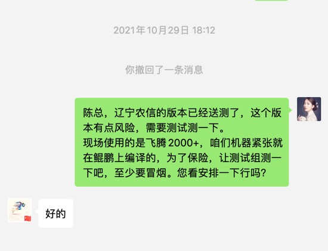 |
2021-11-01 09:39:19 |
你 |
这个事是周五下班我跟老陈说的 我看老陈也安排人了 |
2021-11-01 09:52:31 |
你 |
这个陈婷给的版本号都不对 |
2021-11-01 09:53:02 |
我 |
她根本就不知道该给啥，也没人告诉她 |
2021-11-01 09:53:36 |
我 |
当初是李成龙让大家都给版本号，轮着来 |
2021-11-01 09:53:52 |
我 |
老张也不管，他也不懂 |
2021-11-01 09:53:57 |
你 |
瞎整 |
2021-11-01 09:54:28 |
你 |
发版这事定一个专人 得了呗 |
2021-11-01 09:54:32 |
你 |
我跟老张说说 |
2021-11-01 09:54:41 |
我 |
当初不是老高嘛，老高不愿意干 |
2021-11-01 09:54:55 |
你 |
也不能一星期轮一次 |
2021-11-01 09:54:55 |
我 |
这才是大家都轮着 |
2021-11-01 09:55:00 |
你 |
我知道 |
2021-11-01 09:55:06 |
你 |
定陈婷一个人干吧 |
2021-11-01 09:55:08 |
你 |
你说呢 |
2021-11-01 09:55:10 |
我 |
别和老张说了，没用 |
2021-11-01 09:55:19 |
你 |
行 那就不说了 |
2021-11-01 09:55:31 |
你 |
等我自己说了算了 再定 |
2021-11-01 09:55:43 |
我 |
是 |
2021-11-01 12:23:35 |
你 |
[链接] 李辉的聊天记录 |
2021-11-01 12:24:41 |
我 |
嗯 |
2021-11-01 13:34:47 |
我 |
耳环挺好看 |
2021-11-01 14:27:13 |
你 |
感觉老田特别爱表现 |
2021-11-01 14:27:27 |
我 |
是 |
2021-11-01 15:41:40 |
我 |
39 666:/！人小个家在多家上就会过啊哦倍思65W氮化镓充电器iPhone13快充GaN充电头3代pro适用于macbook平板ipad华为5A联想三星45W多口快充PD闪充 |
2021-11-01 16:13:20 |
你 |
我想知道是老陈跟老张定的我 还是老张找老陈”推荐”的我 |
2021-11-01 16:13:31 |
你 |
我现在反倒觉得是老陈定的我 |
2021-11-01 16:13:57 |
我 |
老陈肯定是希望你做的 |
2021-11-01 16:15:34 |
你 |
那就行了 |
2021-11-01 16:16:08 |
我 |
老陈会给你权力的 |
2021-11-01 16:16:15 |
我 |
你就安排就行了 |
2021-11-01 16:16:35 |
我 |
我要想想老张会做什么 |
2021-11-01 16:45:15 |
我 |
你今天几点下班？ |
2021-11-01 16:45:36 |
你 |
5点多吧 |
2021-11-01 18:26:20 |
你 |
开会呢？ |
2021-11-01 18:26:42 |
我 |
是 |
{kind=link}
2021-11-02¶
2021-11-02 14:14:42 |
你 |
这个不是tr1 么 |
2021-11-02 14:14:54 |
你 |
怎么感觉像结项呢 |
2021-11-02 14:15:07 |
我 |
全乱了[捂脸] |
2021-11-02 14:52:42 |
你 |
感觉350就是为安徽移动做的了 |
2021-11-02 14:52:57 |
你 |
我们做了，安徽移动还等着我们吗？ |
2021-11-02 14:53:08 |
我 |
不知道呀 |
2021-11-02 14:53:09 |
你 |
而且一定不会变吗 |
2021-11-02 14:53:26 |
我 |
应该让销售去收集一下信息 |
2021-11-02 14:53:52 |
你 |
市场经理是丁总？ |
2021-11-02 14:54:08 |
我 |
他瞎掰呢 |
2021-11-02 14:54:19 |
你 |
呵呵 |
2021-11-02 14:56:09 |
你 |
感觉好乱啊 |
2021-11-02 14:56:42 |
我 |
这已经很不错了，至少是用心糊弄了 |
2021-11-02 16:46:43 |
你 |
广东移动和安徽移动几乎POC 测试一模一样 |
2021-11-02 16:56:55 |
我 |
嗯嗯 |
2021-11-02 18:10:58 |
你 |
你说的对，我现在没有模型 |
2021-11-02 18:11:28 |
我 |
嗯嗯，没事。和当年一样，我一样有信心把你带出来 |
2021-11-02 18:26:54 |
你 |
你开完会给我打个电话 |
2021-11-02 18:27:01 |
我 |
好的 |
2021-11-02 18:27:26 |
你 |
如果七点以前没开完，七点以后就甭打了 |
2021-11-02 18:27:35 |
我 |
👌 |
2021-11-02 18:42:37 |
我 |
散会了 |
2021-11-02 18:44:31 |
我 |
[电话] |
2021-11-02 18:46:17 |
我 |
[电话] |
2021-11-02 18:53:25 |
你 |
[电话] |
2021-11-03¶
2021-11-03 09:00:18 |
你 |
|
2021-11-03 09:00:56 |
我 |
你就听他说就行，咱们的想法不要和他说 |
2021-11-03 09:01:03 |
你 |
行 |
2021-11-03 09:09:09 |
你 |
这老张 指定他的时候 他啥也不干 制定我了 他又倍儿积极 |
2021-11-03 09:09:25 |
你 |
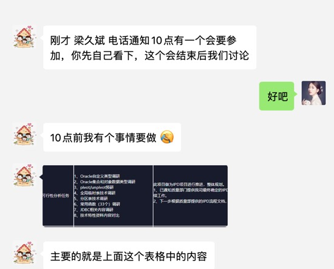 |
2021-11-03 09:09:55 |
你 |
这个会我让海珺也参加一下 你说呢 |
2021-11-03 09:10:09 |
我 |
果不其然，他的狐狸尾巴露出来了 |
2021-11-03 09:10:30 |
我 |
他这是把你推到前面当炮灰，他当太上皇 |
2021-11-03 09:11:01 |
我 |
研发内容他要定，活你来干，干砸了算你的，干好了是他的 |
2021-11-03 09:11:23 |
你 |
嗯嗯 |
2021-11-03 09:11:41 |
我 |
可以不用喊李海珺 |
2021-11-03 09:11:48 |
你 |
好 |
2021-11-03 09:12:14 |
你 |
接下来怎么办 |
2021-11-03 09:12:19 |
你 |
先让他演 |
2021-11-03 09:12:45 |
我 |
两个原因：一是他就是一个执行者，这个会是决策会，二他不参加会，以后是你安排任务，他参加会就相当于老张安排任务了 |
2021-11-03 09:13:07 |
我 |
不用管他，就按照咱们的计划办 |
2021-11-03 09:14:03 |
我 |
最终还是你和老陈定，把他甩开 |
2021-11-03 09:36:26 |
你 |
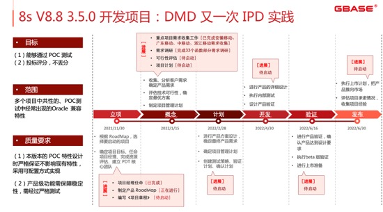 |
2021-11-03 09:36:45 |
你 |
我的 ppt 写完了[胜利] |
2021-11-03 10:07:10 |
我 |
我的还没写呢 |
2021-11-03 10:11:06 |
你 |
麒麟 V10上没有适配的 nmon 是得跟 os 厂商找吗 |
2021-11-03 10:23:23 |
我 |
找源码编译就行 |
2021-11-03 10:56:15 |
你 |
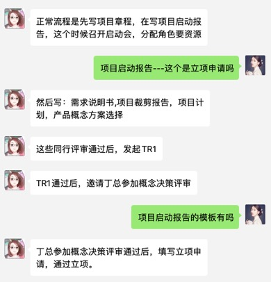 |
2021-11-03 10:56:20 |
你 |
这个流程说的对吗 |
2021-11-03 10:56:56 |
我 |
这个应该是现在咱们执行的流程 |
2021-11-03 10:57:22 |
我 |
好像和 IPD 还不太一样 |
2021-11-03 10:57:33 |
我 |
应该是剪裁过的 |
2021-11-03 10:58:53 |
你 |
怎么概念决策评审之后立项呢 |
2021-11-03 10:59:23 |
你 |
通过立项[苦涩] |
2021-11-03 11:00:22 |
我 |
最后立项这步是王珏加的吧，IPD 的立项是在一开始就立项了 |
2021-11-03 11:00:42 |
你 |
是呢 |
2021-11-03 11:00:49 |
我 |
他说的这个立项应该指的是咱们原来的立项，就是研发启动的立项 |
2021-11-03 11:01:35 |
你 |
同行评审我理解是组内评审吧 |
2021-11-03 11:01:52 |
你 |
比如需求同行评审 就是我们专门做需求的评 |
2021-11-03 11:02:02 |
你 |
技术评审是咱们原来的评审 |
2021-11-03 11:02:04 |
我 |
唉，别提啦。340 他们把同行评审做成 TR 了 |
2021-11-03 11:02:15 |
我 |
这事我和石英抱怨过好多次了 |
2021-11-03 11:02:20 |
你 |
这石英咋说同行和技术是一波人呢 |
2021-11-03 11:02:26 |
我 |
IPD 里面压根就没有同行评审的概念 |
2021-11-03 11:02:44 |
我 |
就是因为他们给搞混了 |
2021-11-03 11:03:00 |
你 |
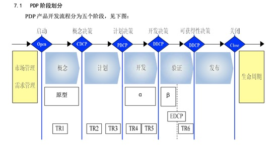 |
2021-11-03 11:03:05 |
你 |
只有 TR 和决策 |
2021-11-03 11:03:15 |
你 |
那个启动会的 ppt 是咋整出来的 |
2021-11-03 11:03:18 |
我 |
没错 |
2021-11-03 11:03:31 |
你 |
还三级评审 |
2021-11-03 11:03:37 |
我 |
这事呀说来话长，同行评审是刘建志提的 |
2021-11-03 11:03:47 |
你 |
瞎整 |
2021-11-03 11:04:20 |
我 |
当初老陈让他和王珏对项目管理部分，他就把他原来那套东西套进来，结果整了一个同行评审 |
2021-11-03 11:04:32 |
你 |
嗯 |
2021-11-03 11:39:07 |
我 |
你和老张聊了吗 |
2021-11-03 11:49:43 |
你 |
没聊 |
2021-11-03 11:50:51 |
你 |
我把我写的ppt发给老陈了 |
2021-11-03 11:51:00 |
你 |
他说今天下午的会讨论 |
2021-11-03 11:52:09 |
我 |
好 |
2021-11-03 15:49:51 |
你 |
我今天又说多，给老张机会了 |
2021-11-03 15:49:53 |
你 |
。。。 |
2021-11-03 15:50:01 |
你 |
你没生气吧 |
2021-11-03 15:52:10 |
我 |
没生气 |
2021-11-03 15:52:21 |
我 |
今天还行 |
2021-11-03 15:52:33 |
你 |
我本来还想理论来着 |
2021-11-03 15:52:44 |
你 |
你一碰我 我就闭嘴了 |
2021-11-03 15:53:43 |
我 |
[动画表情] |
2021-11-03 15:59:55 |
我 |
今天有空我和你分析一下今天的事情 |
2021-11-03 16:00:19 |
你 |
我下班吧 |
2021-11-03 16:00:22 |
你 |
你跟我一起 |
2021-11-03 16:13:15 |
我 |
好 |
2021-11-03 17:00:04 |
你 |
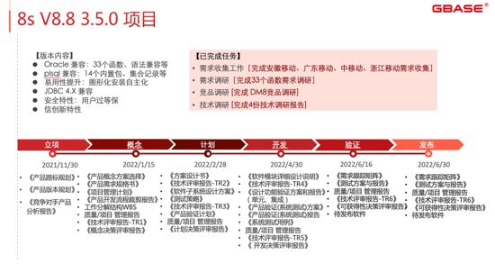 |
2021-11-03 17:00:33 |
我 |
👍 |
2021-11-03 20:20:53 |
你 |
|
2021-11-03 20:20:58 |
你 |
不用回复 |
{kind=link}
{kind=link}
{kind=link}
{kind=link}
{kind=link}
{kind=link}
{kind=link}
2021-11-04¶
2021-11-04 08:51:29 |
你 |
[链接] 等不到天黑和李辉的聊天记录 |
2021-11-04 08:53:07 |
我 |
嗯，这种小摩擦会一直有的 |
2021-11-04 08:53:26 |
我 |
本质上也是他和你争夺领导权 |
2021-11-04 08:53:51 |
你 |
是 |
2021-11-04 08:53:57 |
你 |
他就是这么阴 |
2021-11-04 08:55:14 |
我 |
现在肯给他出头的人都没了，他也没办法了 |
2021-11-04 09:54:44 |
你 |
刚才老张让冀辉看 rd 上需求 说要做350规划，冀辉说想做网站 老张说你先别做网站了 |
2021-11-04 09:56:05 |
我 |
哈哈，冀辉哪懂这些呀 |
2021-11-04 09:56:47 |
你 |
让他折腾去吧 |
2021-11-04 09:56:54 |
你 |
我今天就把项目章程写完 |
2021-11-04 09:57:02 |
你 |
有时间咱们过下细节 就开会 |
2021-11-04 09:57:24 |
我 |
嗯嗯 |
2021-11-04 12:25:11 |
你 |
[链接] 李辉和李杰的聊天记录 |
2021-11-04 12:25:29 |
你 |
我妈把跑跑身世告诉李杰婆婆了 |
2021-11-04 12:26:35 |
我 |
啊 |
2021-11-04 12:27:48 |
我 |
不过也应该没啥事吧 |
2021-11-04 12:33:15 |
我 |
你咋想？ |
2021-11-04 12:36:30 |
你 |
先睡觉 |
2021-11-04 12:36:47 |
你 |
我现在非常不能接受 |
2021-11-04 12:37:14 |
我 |
嗯嗯，别着急 |
2021-11-04 12:38:00 |
你 |
我从心里不能接受薛超妈，我只能保证不讨厌她 |
2021-11-04 12:38:24 |
你 |
或者说讨厌，但还能短暂相处 |
2021-11-04 12:39:08 |
我 |
我明白 |
2021-11-04 13:15:03 |
你 |
睡了吗 |
2021-11-04 13:15:08 |
你 |
我睡不着 |
2021-11-04 13:33:13 |
我 |
刚醒 |
2021-11-04 13:34:28 |
你 |
嗯嗯 |
2021-11-04 13:35:02 |
我 |
你咋样，生气了？ |
2021-11-04 13:35:57 |
你 |
没有 |
2021-11-04 13:36:22 |
你 |
下午跟你讨论下350任务 |
2021-11-04 13:36:26 |
你 |
你有时间吗 |
2021-11-04 13:36:38 |
你 |
章程我写的差不多了 |
2021-11-04 13:36:46 |
我 |
好，我2点有个会，开完了我找你吧 |
2021-11-04 13:36:51 |
你 |
行 |
2021-11-04 15:15:43 |
你 |
你开完会了吗 |
2021-11-04 15:16:56 |
我 |
开完了，咱们去双鱼座吧 |
2021-11-04 15:17:03 |
你 |
行 |
2021-11-04 15:17:14 |
你 |
我去你工位呗 |
2021-11-04 15:17:23 |
我 |
好 |
2021-11-05¶
2021-11-05 08:59:30 |
你 |
咱们是可以通过替换 oninit 实现升级的对吧 |
2021-11-05 08:59:58 |
我 |
是 |
2021-11-05 09:00:54 |
你 |
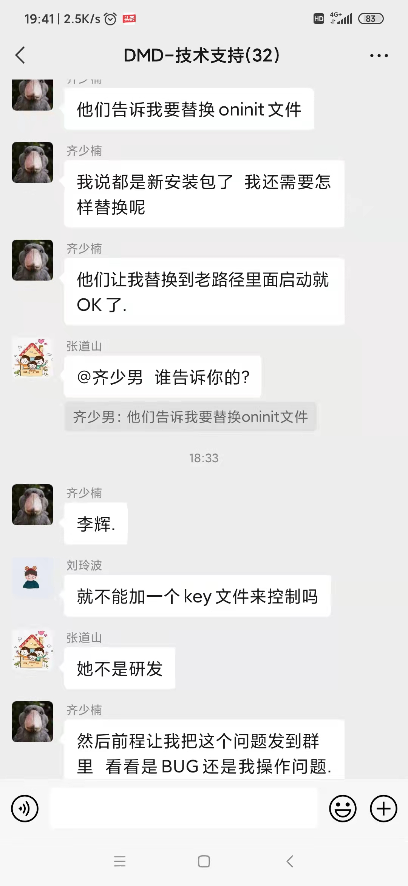 |
2021-11-05 09:01:06 |
你 |
小宁给我发的 |
2021-11-05 09:01:15 |
你 |
他又在背后诋毁我了 |
2021-11-05 09:01:49 |
我 |
呵呵 |
2021-11-05 09:15:18 |
我 |
[链接] 交到一位灵魂伴侣是人生一大幸运 |
2021-11-05 09:33:02 |
你 |
黄金易得，知音难觅 |
2021-11-05 09:33:12 |
你 |
黄金易得，知音难觅 |
2021-11-05 09:33:35 |
我 |
是呀 |
2021-11-05 09:33:59 |
你 |
我刚才跟老陈约时间 过项目章程 他非得叫上质量科和老张 |
2021-11-05 09:34:39 |
你 |
我想今天上午过一下 下午我请假了 |
2021-11-05 09:34:44 |
我 |
那就喊上吧，你把章程发给我 |
2021-11-05 09:35:17 |
你 |
这里边东西也不多 |
2021-11-05 09:35:54 |
你 |
这文档还加密码了 |
2021-11-05 09:35:59 |
你 |
我查一下怎么删除 |
2021-11-05 09:39:19 |
你 |
P01-02-02：3.5.0 项目章程 v1.0.docx |
2021-11-05 09:40:11 |
你 |
叫就叫吧 叫也对 |
2021-11-05 09:40:19 |
你 |
你先看一下 |
2021-11-05 09:40:53 |
我 |
[动画表情] |
2021-11-05 09:41:33 |
你 |
你参加吗 |
2021-11-05 09:41:37 |
你 |
我发消息了 |
2021-11-05 09:42:04 |
我 |
不用了 |
2021-11-05 09:42:59 |
我 |
今天重点放在简介和目的上，范围别讨论 |
2021-11-05 09:43:06 |
你 |
嗯嗯 |
2021-11-05 09:43:16 |
你 |
这里边的范围写的很虚 |
2021-11-05 09:43:18 |
我 |
范围回来私下和老陈讨论 |
2021-11-05 09:43:22 |
你 |
行 |
2021-11-05 09:43:28 |
我 |
不给老张机会 |
2021-11-05 09:43:32 |
你 |
好的 |
2021-11-05 11:15:30 |
你 |
结束了 |
2021-11-05 11:15:35 |
你 |
没事 |
2021-11-05 11:20:17 |
我 |
刚才老丁找我了 |
2021-11-05 11:20:22 |
你 |
啥事 |
2021-11-05 11:20:34 |
我 |
问O兼容的事情 |
2021-11-05 11:20:44 |
你 |
哎呀 看来他非常在乎啊 |
2021-11-05 11:21:10 |
我 |
我和他说了一下咱们的想法，他基本上认可 |
2021-11-05 11:21:22 |
我 |
也是先做评测的 |
2021-11-05 11:21:31 |
你 |
是吧 |
2021-11-05 11:21:32 |
我 |
他比较着急 |
2021-11-05 11:21:40 |
你 |
先出 POC 版呗 |
2021-11-05 11:21:44 |
你 |
你看 这咋整 |
2021-11-05 11:21:52 |
我 |
我和他说6月份发版 |
2021-11-05 11:21:58 |
你 |
他怎么说 |
2021-11-05 11:22:02 |
我 |
不是POC版 |
2021-11-05 11:22:21 |
我 |
就是正式版，咱们把需求写简单一点 |
2021-11-05 11:22:40 |
我 |
以后不要提POC版 |
2021-11-05 11:23:04 |
我 |
还有老丁把毛庆给撤了 |
2021-11-05 11:23:39 |
你 |
嗯嗯 不提 POC |
2021-11-05 11:23:46 |
你 |
为啥撤了 |
2021-11-05 11:24:02 |
我 |
没完成任务 |
2021-11-05 11:24:14 |
我 |
兴业丢单了 8a |
2021-11-05 11:24:32 |
你 |
哦哦 |
2021-11-05 11:24:39 |
你 |
早该撤了 |
2021-11-05 11:24:45 |
你 |
牟魏没准也会被撤 |
2021-11-05 11:24:58 |
我 |
应该不会 |
2021-11-05 11:25:26 |
我 |
老丁还是挺信任的 |
2021-11-05 11:26:10 |
你 |
嗯嗯 |
2021-11-05 11:26:17 |
你 |
牟魏按理说有能力 |
2021-11-05 11:26:23 |
你 |
还说啥了 |
2021-11-05 11:26:27 |
你 |
你跟他说的是350吗 |
2021-11-05 11:26:40 |
我 |
是 |
2021-11-05 11:27:14 |
我 |
老丁还说了销售最重要的就是忠诚 |
2021-11-05 11:27:20 |
你 |
哈哈 |
2021-11-05 11:27:24 |
你 |
跟你说的一样 |
2021-11-05 11:27:43 |
我 |
其他的就是闲扯了 |
2021-11-05 11:28:01 |
你 |
我看我也没啥去他那刷脸的必要了 |
2021-11-05 11:28:22 |
我 |
不着急，等机会 |
2021-11-05 11:28:28 |
你 |
嗯嗯 |
2021-11-05 11:28:30 |
你 |
等机会 |
2021-11-05 11:30:37 |
你 |
这个章程讨论最多的就是要做啥 老张一直追细节 老陈一直不给他机会 |
2021-11-05 11:30:44 |
你 |
下来咱们定一下吧 |
2021-11-05 11:31:04 |
我 |
嗯嗯 |
2021-11-05 11:31:14 |
你 |
原则：能确定的一定写准确，不确定的可以不写，如果必须做又不确定是否能做，可以虚写，尽量别砍 |
2021-11-05 11:31:26 |
你 |
我就说下来再定下 现在什么也定不下来 |
2021-11-05 11:32:25 |
你 |
另外我问了一个问题 我说 IPD 这几个阶段划分的依据是啥 老陈说这个问题90%的人都不知道 他也不知道 哈哈 |
2021-11-05 11:32:37 |
你 |
当时笑死我了 |
2021-11-05 11:32:48 |
你 |
你吃完饭了吗 |
2021-11-05 11:32:50 |
我 |
哈哈 |
2021-11-05 11:32:57 |
我 |
我刚到食堂 |
2021-11-05 11:33:05 |
你 |
我12点就下班了 |
2021-11-05 11:34:10 |
我 |
我12点前能回去[呲牙] |
2021-11-05 11:39:33 |
你 |
回不来拉到 |
2021-11-05 11:40:05 |
我 |
我快点吃，一定能回去 |
2021-11-05 11:40:13 |
你 |
我没事 |
2021-11-05 11:40:17 |
你 |
你快吃啥 |
2021-11-05 11:46:23 |
我 |
吃完了 |
2021-11-05 11:46:33 |
我 |
我在一楼等你吧 |
2021-11-05 11:46:38 |
我 |
不着急 |
{kind=link}
2021-11-08¶
2021-11-08 12:59:06 |
你 |
开完周会咱们过一下规划 你有时间吗 |
2021-11-08 12:59:58 |
我 |
有时间 |
2021-11-08 13:00:05 |
我 |
你中午没睡吗 |
2021-11-08 13:00:27 |
你 |
没睡 |
2021-11-08 13:00:31 |
你 |
睡不着 |
2021-11-08 13:09:19 |
我 |
[链接] 群聊的聊天记录 |
2021-11-08 13:11:55 |
你 |
嗯 |
2021-11-08 13:16:17 |
你 |
8s 的需要做吗 |
2021-11-08 13:16:24 |
你 |
老丁没说啊 |
2021-11-08 13:16:35 |
我 |
唉，老陈刚说完 |
2021-11-08 13:16:48 |
我 |
[链接] 群聊的聊天记录 |
2021-11-08 13:17:12 |
我 |
你俩几乎同时说的[偷笑] |
2021-11-08 13:17:14 |
你 |
我就当不知道 |
2021-11-08 13:17:18 |
我 |
是 |
2021-11-08 13:17:35 |
你 |
反正命令也是到老张那层了 对吧 |
2021-11-08 13:18:08 |
我 |
是 |
2021-11-08 13:24:55 |
我 |
[链接] 群聊的聊天记录 |
2021-11-08 13:25:31 |
你 |
你们讨论啥 我想说 |
2021-11-08 13:25:44 |
我 |
不知道 |
2021-11-08 13:25:56 |
我 |
等老陈安排吧 |
2021-11-08 13:26:12 |
我 |
没准待会周会会提 |
2021-11-08 13:26:13 |
你 |
嗯 好 |
2021-11-08 13:26:17 |
你 |
嗯嗯 |
2021-11-08 13:59:07 |
你 |
这项目年底就要上线？ |
2021-11-08 13:59:15 |
你 |
啥时候的事 |
2021-11-08 13:59:32 |
我 |
你走之前 |
2021-11-08 14:00:02 |
我 |
你记得为这事我特意喊上你和老陈讨论过这事 |
2021-11-08 14:00:31 |
你 |
不记得了 |
2021-11-08 14:00:44 |
你 |
我走之前就咱俩调研过函数功能 |
2021-11-08 14:00:53 |
你 |
需求是李成龙安排写的 |
2021-11-08 14:01:07 |
你 |
我还以为不着急呢 |
2021-11-08 14:01:31 |
我 |
唉，我让维群赶紧催，他不催 |
2021-11-08 14:01:42 |
我 |
今天也是我让刘建志提的 |
2021-11-08 14:02:02 |
我 |
我们早就调研完了 |
2021-11-08 14:02:46 |
你 |
好的 |
2021-11-08 14:04:29 |
我 |
今天老陈脾气不好 |
2021-11-08 14:05:28 |
你 |
看出来了 |
2021-11-08 14:53:00 |
我 |
建辉太笨了，让老张压着打 |
2021-11-08 14:53:08 |
你 |
那肯定的 |
2021-11-08 14:53:26 |
你 |
笨死了 |
2021-11-08 15:22:08 |
你 |
T2-软件需求规格说明书_国家官网项目PIVOT&UNPIVOT函数_V2.1_20210719_gys.docx |
2021-11-08 15:22:21 |
你 |
这就是写完的需求[捂脸] |
2021-11-08 15:22:40 |
我 |
嗯嗯 |
2021-11-08 16:54:45 |
你 |
你开完会了吗 |
2021-11-08 16:55:11 |
我 |
开完了，说picc的事情呢 |
2021-11-08 16:55:29 |
我 |
等说完了咱俩过吧 |
2021-11-08 16:55:51 |
你 |
好 |
2021-11-08 17:01:33 |
我 |
完事了 |
2021-11-08 17:02:11 |
你 |
那我找你去 |
2021-11-08 17:02:26 |
我 |
好 |
2021-11-08 18:01:56 |
你 |
数据管理产品经营部_2021下半年产品研发规划_V1.0_20211014.docx |
2021-11-08 18:02:16 |
你 |
移动产品不满足项-20211103的.xlsx |
2021-11-08 18:02:19 |
你 |
红色的是你的 |
2021-11-09¶
2021-11-09 09:37:51 |
你 |
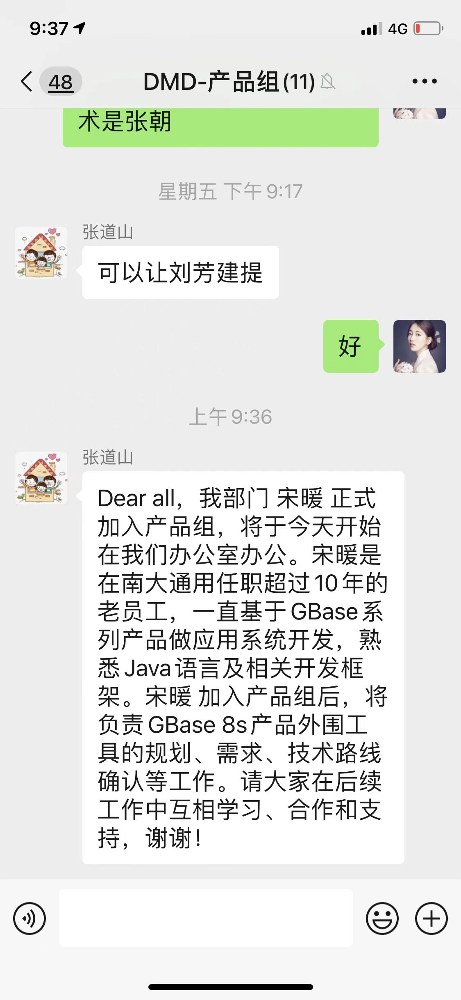 |
2021-11-09 10:54:40 |
你 |
在吗 |
2021-11-09 10:54:45 |
你 |
有空吗 |
2021-11-09 10:55:02 |
我 |
抽烟呢 |
2021-11-09 11:01:04 |
你 |
宋暖做我们屋来了 |
2021-11-09 11:01:48 |
我 |
来吧，正好工具让他去做 |
2021-11-09 11:02:05 |
你 |
嗯嗯 |
2021-11-09 11:04:01 |
你 |
抽烟回来了吗 |
2021-11-09 11:04:28 |
我 |
回来了 |
2021-11-09 11:05:54 |
我 |
我去找你还是你来找我？ |
2021-11-09 11:16:02 |
我 |
？ |
2021-11-09 11:27:21 |
我 |
我去吃饭了[呲牙] |
2021-11-09 11:32:54 |
你 |
去吧 我找维群说呢 |
2021-11-09 14:58:36 |
我 |
忙吗 |
2021-11-09 16:12:52 |
你 |
我今天五点就下班 |
2021-11-09 16:12:56 |
你 |
去游泳 |
2021-11-09 16:13:12 |
我 |
好的 |
2021-11-09 16:23:22 |
你 |
我下午培训了， |
2021-11-09 16:23:31 |
你 |
现在正吸奶呢 |
2021-11-09 16:23:41 |
我 |
嗯嗯 |
2021-11-09 16:23:50 |
我 |
我估计你就是去培训了 |
2021-11-09 16:23:52 |
你 |
上午找老陈了 |
2021-11-09 16:24:27 |
我 |
老陈说啥了吗 |
2021-11-09 16:24:27 |
你 |
跟他说了，老陈一点没反驳，说可以，然后我问他有啥要求，他就说了一些易用性的事 |
2021-11-09 16:24:49 |
我 |
哦，对了，我还得让老田评估易用性呢 |
2021-11-09 16:24:55 |
我 |
我都忘了[捂脸] |
2021-11-09 16:25:11 |
你 |
我上午想找你说这个事 |
2021-11-09 16:25:43 |
你 |
除了易用性，还有安全合并那部分，也需要研发定下合并哪些内容 |
2021-11-09 16:26:07 |
我 |
行，我让他们去评估 |
2021-11-09 16:26:26 |
你 |
[链接] 李辉和珺的聊天记录 |
2021-11-09 16:26:56 |
你 |
具体合并完是什么状态，加开关啥的，等后续再定 |
2021-11-09 16:26:57 |
我 |
哈哈，挺好 |
2021-11-09 16:27:17 |
你 |
今天我挺高兴的 |
2021-11-09 16:27:46 |
你 |
本来你们不是要讨论产品竞争力吗？说今天讨论的对吧 |
2021-11-09 16:28:00 |
我 |
是，今天也没有讨论 |
2021-11-09 16:28:11 |
你 |
我跟老陈说下午我有个培训，改到明天吧，老陈说可以，看你的时间 |
2021-11-09 16:28:24 |
我 |
真的呀 |
2021-11-09 16:28:44 |
你 |
是啊，我今天没空，所以就改到明天了 |
2021-11-09 16:29:14 |
我 |
[强] |
2021-11-09 16:29:17 |
你 |
今天欣姐过来找我 说跟赵总说下 8s 要启动350 李辉是项目经理 老赵说太好了 李辉靠谱 |
2021-11-09 16:29:44 |
我 |
真不错 |
2021-11-09 16:29:56 |
我 |
你现在太强了 |
2021-11-09 16:30:45 |
你 |
我现在被他们cue到，不仅仅是窃喜了，更多的事离我的梦想又近了 |
2021-11-09 16:31:22 |
我 |
是呀是呀 |
2021-11-09 16:31:37 |
我 |
太高兴啦[鼓掌] |
2021-11-09 16:32:22 |
你 |
就是 |
2021-11-09 16:32:32 |
你 |
我一定要把这事做成 |
2021-11-09 16:32:38 |
我 |
[动画表情] |
2021-11-09 16:33:07 |
你 |
我下午找了维群，收集了他的想法，我还想找几个跟我关系好的售前 |
2021-11-09 16:33:16 |
你 |
把工作做实一点 |
2021-11-09 16:33:34 |
你 |
好有话对付老张和老丁 |
2021-11-09 16:34:06 |
我 |
是，至少你工作做的比老张扎实 |
2021-11-09 16:34:28 |
你 |
那是 |
2021-11-09 16:56:28 |
我 |
下班吗 |
2021-11-09 16:56:32 |
你 |
下班 |
{kind=link}
2021-11-10¶
2021-11-10 08:26:12 |
你 |
昨天小孩感冒发烧了，折腾了半宿 |
2021-11-10 08:26:28 |
你 |
我今天去不了了，我妈一个人整不了 |
2021-11-10 08:26:41 |
我 |
嗯，厉害吗 |
2021-11-10 08:27:31 |
你 |
精神状态还行，就是鼻子不通气，没法睡觉 |
2021-11-10 08:27:48 |
你 |
吃奶也得喘一口吃一会 |
2021-11-10 08:27:59 |
你 |
昨晚上一直抱着 |
2021-11-10 08:32:12 |
你 |
我就是惦记着那个竞品的会 |
2021-11-10 08:35:53 |
我 |
没事，先照顾好孩子 |
2021-11-10 10:02:36 |
你 |
|
2021-11-10 10:03:29 |
你 |
我发现我也是一名女战士 |
2021-11-10 10:20:19 |
我 |
[链接] 群聊的聊天记录 |
2021-11-10 10:21:57 |
我 |
老陈喊你了吗 |
2021-11-10 10:24:52 |
你 |
没有 |
2021-11-10 10:24:56 |
你 |
啥会 |
2021-11-10 10:25:30 |
我 |
老陈没说，估计是竞品的 |
2021-11-10 10:25:39 |
你 |
|
2021-11-10 10:25:43 |
你 |
我跟他说了 |
2021-11-10 10:25:48 |
你 |
没说啥会吗 |
2021-11-10 10:26:04 |
我 |
他没说啥会 |
2021-11-10 10:26:17 |
我 |
没事，反正我也参加 |
2021-11-10 10:26:25 |
你 |
那估计不是竞品的 |
2021-11-10 10:27:30 |
你 |
要求谁务必参加 |
2021-11-10 10:28:08 |
我 |
就是部门管理人员 |
2021-11-10 10:28:25 |
你 |
唉 |
2021-11-10 10:28:30 |
你 |
我就不该请假 |
2021-11-10 10:28:38 |
你 |
这孩子太不给力了 |
2021-11-10 10:28:54 |
我 |
没事，应该不是竞品的 |
2021-11-10 10:29:07 |
我 |
老陈的语气不太像 |
2021-11-10 10:30:46 |
你 |
看看啥事 |
2021-11-10 11:14:35 |
我 |
开完了，工资延迟到22号发 |
2021-11-10 11:16:23 |
你 |
为啥 |
2021-11-10 11:17:10 |
你 |
现金流断了吗 |
2021-11-10 11:17:14 |
我 |
疫情影响回款和融资了 |
2021-11-10 11:17:24 |
你 |
唉 |
2021-11-10 11:17:54 |
我 |
老陈说他们群里老丁说下周可以到 |
2021-11-10 11:18:16 |
我 |
估计还是因为资金档期的问题 |
2021-11-10 11:18:18 |
你 |
老丁压力也很大 |
2021-11-10 11:18:24 |
你 |
嗯 |
2021-11-10 11:18:26 |
你 |
唉 |
2021-11-10 11:18:29 |
你 |
真可怜 |
2021-11-10 11:18:52 |
我 |
是 |
2021-11-10 14:30:15 |
我 |
[链接] 田志敏和王雪松的聊天记录 |
2021-11-10 14:51:00 |
你 |
他咋有这个 |
2021-11-10 14:51:25 |
我 |
说可能是小路给李鹏发的 |
2021-11-10 14:52:24 |
你 |
哦 |
2021-11-10 14:52:36 |
我 |
小孩好点了吗 |
2021-11-10 15:17:55 |
你 |
还那样，明天说啥也得上班了 |
2021-11-10 15:18:01 |
你 |
一直流鼻涕 |
2021-11-10 15:18:12 |
我 |
去看了吗？ |
2021-11-10 15:18:21 |
你 |
拿药了 |
2021-11-10 15:19:09 |
我 |
嗯，只要别厉害了就好 |
2021-11-10 15:19:11 |
你 |
昨晚上发热了，早上灌了药退下去了 |
2021-11-10 15:19:21 |
你 |
下午也没热 |
2021-11-10 15:19:32 |
我 |
那就好 |
2021-11-10 15:19:35 |
你 |
一直心情不好 |
2021-11-10 15:20:07 |
我 |
啊，因为小孩生病吗 |
2021-11-10 15:35:17 |
你 |
我说小孩一直心情不好 |
2021-11-10 15:35:54 |
我 |
哦哦，是的，小孩难受说不出来 |
{kind=link}
2021-11-11¶
2021-11-11 09:13:16 |
我 |
[链接] 群聊的聊天记录 |
2021-11-11 09:13:50 |
你 |
真晕 |
2021-11-11 09:13:55 |
你 |
他又请假了 |
2021-11-11 09:13:58 |
你 |
我来上班了 |
2021-11-11 09:14:09 |
我 |
嗯嗯 |
2021-11-11 09:14:54 |
你 |
陈总现在你们的群里挺活跃的 |
2021-11-11 09:15:29 |
我 |
没有，我觉得就是他没看清楚群 |
2021-11-11 09:15:42 |
我 |
应该是发核心组的 |
2021-11-11 09:15:51 |
你 |
哈哈 |
2021-11-11 09:16:00 |
你 |
最近生病都挺难受的 |
2021-11-11 09:16:04 |
你 |
你也小心点 |
2021-11-11 09:16:12 |
我 |
是 |
2021-11-11 09:22:38 |
你 |
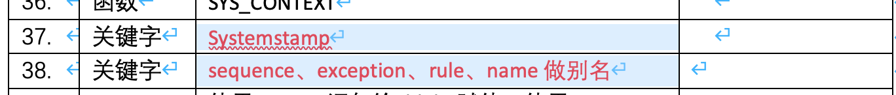 |
2021-11-11 09:22:44 |
你 |
这个你看看能不能评估下 |
2021-11-11 09:22:49 |
你 |
海珺说他们做不了 |
2021-11-11 09:22:58 |
你 |
他们只能做函数、内置包 |
2021-11-11 09:23:14 |
我 |
行，我评估吧 |
2021-11-11 09:32:48 |
你 |
现有问题汇总分析–安全.xlsx |
2021-11-11 09:43:15 |
我 |
这个包含华库的项目吗 |
2021-11-11 09:43:27 |
你 |
不包含 |
2021-11-11 09:43:35 |
我 |
好 |
2021-11-11 09:43:57 |
你 |
这个是项目上 用户过等保提出的测试项目 |
2021-11-11 09:44:06 |
你 |
这个 Excel 应该是吕迅弄的 |
2021-11-11 09:44:07 |
我 |
好的 |
2021-11-11 09:44:23 |
你 |
我又搜集到一些 时间都太久远了 没啥参考价值 |
2021-11-11 10:25:03 |
你 |
安全这块有个问题，现在咱们有四级版、涉密版 EAL4+版，这些测试的内容我都不熟 现场过等保都是用户自己定的 有参考上边的标准 也有自己发挥 用户写的这些我也不熟 所以这个安全特性 到底怎么合并 我不太会。。。 |
2021-11-11 10:25:48 |
我 |
这事我来安排吧，我让吕迅评估一下 |
2021-11-11 10:28:06 |
你 |
我今天约了老赵 |
2021-11-11 10:28:23 |
你 |
跟他了解下规划的想法 另外过一下项目章程 |
2021-11-11 10:38:17 |
我 |
好 |
2021-11-11 11:44:03 |
你 |
跟老赵过完了 |
2021-11-11 11:44:20 |
我 |
他说啥了 |
2021-11-11 11:53:16 |
你 |
没说啥，下午我找你 |
2021-11-11 11:56:08 |
我 |
好 |
2021-11-11 12:33:59 |
你 |
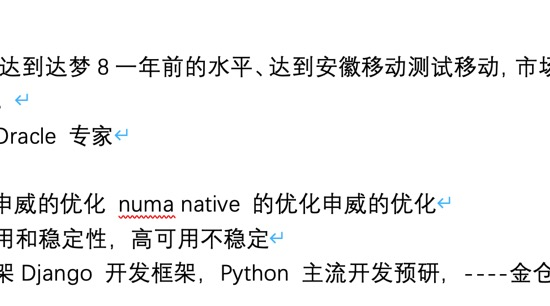 |
2021-11-11 12:34:02 |
你 |
赵总的 |
2021-11-11 12:34:30 |
我 |
好的 |
2021-11-11 13:17:34 |
你 |
睡觉呢吗 |
2021-11-11 13:17:51 |
我 |
没有 |
2021-11-11 13:19:01 |
你 |
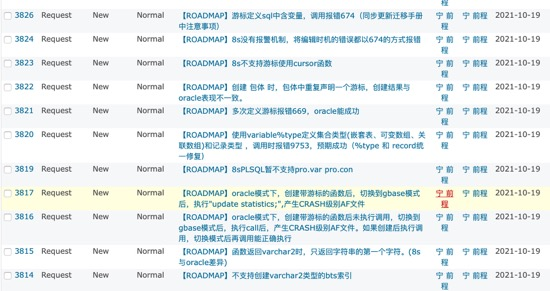 |
2021-11-11 13:19:23 |
你 |
这是上次 buglist 评审遗留的转成需求的问题 你看看哪个可以做 |
2021-11-11 13:19:42 |
我 |
好的，我让他们去评估 |
2021-11-11 13:21:17 |
你 |
对了 国网宕机了 你知道吗 |
2021-11-11 13:21:33 |
我 |
维群和我说了一句，具体不知道 |
2021-11-11 13:22:21 |
你 |
他跟你说了就行 |
2021-11-11 14:58:19 |
你 |
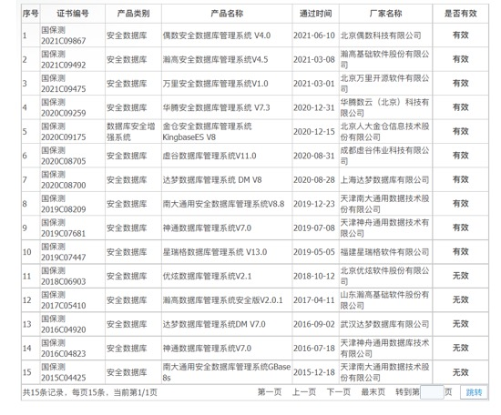 |
2021-11-11 16:05:57 |
我 |
小强还和吴智勇解释由道入道和由魔入道[捂脸] |
2021-11-11 16:06:20 |
你 |
哈哈 |
2021-11-11 16:38:53 |
你 |
老王 我觉得我的工资实在是太少了 |
2021-11-11 16:39:14 |
我 |
是呀 |
2021-11-11 16:39:27 |
我 |
找找老陈，看看有没有机会涨点 |
2021-11-11 16:39:43 |
你 |
我真得再找找老陈 |
2021-11-11 16:39:48 |
你 |
不然我就找老赵去 |
2021-11-11 16:40:00 |
我 |
对 |
2021-11-11 16:40:04 |
你 |
李杰又跟我得瑟工资的事 我心理可不平衡了 |
2021-11-11 16:40:37 |
你 |
我在想我这个级别的 应该都比我高吧 |
2021-11-11 16:40:43 |
你 |
为啥我非得吃亏呢 |
2021-11-11 16:40:46 |
我 |
唉，对你来说，咱们公司啥都好，就是工资太少了 |
2021-11-11 16:41:32 |
你 |
李杰说明年他能涨1万 |
2021-11-11 16:41:42 |
你 |
我真的可难受了 |
2021-11-11 16:42:01 |
我 |
啊，那么多。他现在多少了 |
2021-11-11 16:42:05 |
你 |
24 |
2021-11-11 16:42:14 |
你 |
因为她升职了 |
2021-11-11 16:42:21 |
我 |
唉，差的太多了 |
2021-11-11 16:42:22 |
你 |
而且表现突出 |
2021-11-11 16:42:35 |
你 |
我心理不平衡啊 |
2021-11-11 16:42:40 |
我 |
找机会你找老陈聊聊 |
2021-11-11 16:42:42 |
你 |
唉 气死我了 |
2021-11-11 16:42:50 |
你 |
我直接找赵总 |
2021-11-11 16:42:54 |
你 |
老陈肯定没办法 |
2021-11-11 16:43:12 |
我 |
老陈老赵都得找 |
2021-11-11 16:43:23 |
你 |
我先找王欣说说 |
2021-11-11 16:43:26 |
我 |
没办法也得让他知道你委屈了 |
2021-11-11 16:43:40 |
你 |
我相信老赵肯定有办法 |
2021-11-11 16:43:48 |
我 |
嗯 |
2021-11-11 16:55:28 |
我 |
你几点下班 |
2021-11-11 16:55:55 |
你 |
5点吧 |
2021-11-11 16:56:10 |
我 |
这就到了[偷笑] |
2021-11-11 16:56:21 |
你 |
我心情坏透了 |
2021-11-11 16:56:36 |
我 |
我知道 |
2021-11-11 16:58:41 |
你 |
欣姐跟我说让我350立项完去找老丁 |
2021-11-11 16:59:20 |
我 |
好呀 |
2021-11-11 16:59:39 |
你 |
找老丁也没用 |
2021-11-11 16:59:43 |
我 |
先让老丁知道你能干 |
2021-11-11 16:59:46 |
你 |
老丁也不知道我都做啥了 |
2021-11-11 17:00:02 |
你 |
即使立项成功了 也代表不了什么 |
2021-11-11 17:00:25 |
你 |
现在是公司艰难时候，不是公司不行的时候，看想不想能不能继续坚持。如果想，可以找机会与老大们谈谈工资问题。 |
2021-11-11 17:00:40 |
你 |
最后这句话是欣姐告诉我的 |
2021-11-11 17:00:47 |
我 |
嗯嗯 |
2021-11-11 17:01:19 |
我 |
你下班吗？ |
2021-11-11 17:01:34 |
我 |
下班我和你说说毛永康的事情 |
2021-11-11 17:01:58 |
你 |
老毛的薪资吗 |
2021-11-11 17:02:02 |
我 |
是 |
2021-11-11 17:02:10 |
你 |
我不想听 |
2021-11-11 17:02:24 |
你 |
他也不是我 我也有我的压力 |
2021-11-11 17:19:46 |
我 |
下班吗？ |
2021-11-11 17:20:13 |
你 |
下班 |
2021-11-11 18:08:47 |
你 |
我好多了 |
2021-11-11 18:09:04 |
你 |
难为你了劝我 |
2021-11-11 18:10:08 |
我 |
我只是担心你，你好了我就放心了 |
{kind=link}
{kind=link}
{kind=link}
{kind=link}
2021-11-12¶
2021-11-12 09:25:36 |
我 |
pivot那个还需要给维群他们单独发个版本吗 |
2021-11-12 09:26:10 |
你 |
我觉得不需要 |
2021-11-12 09:26:24 |
我 |
好 |
2021-11-12 09:26:26 |
你 |
你们多长时间能做出来吗 |
2021-11-12 09:26:42 |
你 |
我问问志增 能不能跟350一起 |
2021-11-12 09:26:48 |
我 |
2个月编码 |
2021-11-12 09:27:09 |
你 |
pivot 和 unpivot 都做吗 |
2021-11-12 09:27:15 |
我 |
是 |
2021-11-12 09:27:17 |
你 |
这个可是要上线用 |
2021-11-12 09:28:00 |
我 |
是，先满足现场的语句 |
2021-11-12 09:28:21 |
你 |
有人做吗 |
2021-11-12 09:29:43 |
我 |
有，一直安排一个研发在调研呢，已经做了好几个月了 |
2021-11-12 09:30:48 |
你 |
嗯嗯 |
2021-11-12 09:30:51 |
你 |
我问问志增 |
2021-11-12 09:31:57 |
你 |
需要改系统表吗 |
2021-11-12 09:34:25 |
我 |
不用 |
2021-11-12 09:36:02 |
你 |
那就做吧 |
2021-11-12 09:36:02 |
你 |
启动吧 |
2021-11-12 09:36:02 |
你 |
反正也是要做的 |
2021-11-12 09:36:03 |
我 |
好 |
2021-11-12 09:40:52 |
我 |
这事现在比较麻烦的是需求 |
2021-11-12 09:41:12 |
你 |
没事 |
2021-11-12 09:41:20 |
你 |
直接找需求就行 |
2021-11-12 09:41:34 |
我 |
维群他们说不清楚，老张他们写的太全太泛泛 |
2021-11-12 09:41:44 |
你 |
维群说不清楚 |
2021-11-12 09:41:49 |
你 |
我问问志增去 |
2021-11-12 09:42:00 |
我 |
我想的是只做现场需要的，要是全做就时间太长了 |
2021-11-12 09:42:19 |
你 |
你就提就行 |
2021-11-12 09:42:24 |
你 |
让他们重写 |
2021-11-12 09:42:33 |
你 |
你开发着你得 |
2021-11-12 09:42:39 |
你 |
我问问志增去 |
2021-11-12 09:42:48 |
我 |
好 |
2021-11-12 09:48:55 |
你 |
丁总让我去他办公室 |
2021-11-12 09:48:58 |
你 |
谈规划 |
2021-11-12 09:49:11 |
我 |
去吧 |
2021-11-12 10:12:58 |
你 |
完事了 |
2021-11-12 10:13:19 |
我 |
聊得怎么样 |
2021-11-12 10:13:29 |
你 |
我觉得挺好的 |
2021-11-12 10:14:51 |
你 |
老丁说让找个懂oracle的过来，把我们离oracle还差啥搞出来 |
2021-11-12 10:15:13 |
我 |
嗯嗯 |
2021-11-12 10:15:15 |
你 |
老丁让我找老陈过去 |
2021-11-12 10:17:14 |
我 |
哦 |
2021-11-12 10:17:36 |
我 |
我正想去找老陈呢 |
2021-11-12 10:17:42 |
你 |
老陈不在 |
2021-11-12 10:17:50 |
你 |
打电话拒绝了 估计在开会 |
2021-11-12 10:17:57 |
我 |
好吧 |
2021-11-12 10:35:41 |
你 |
刚才老赵给我打电话了 |
2021-11-12 10:35:50 |
你 |
我感觉这事是不是我给搅和的太大了 |
2021-11-12 10:36:00 |
你 |
老陈会不会怪我啊 |
2021-11-12 10:36:16 |
我 |
不会 |
2021-11-12 10:36:49 |
你 |
老赵说了2个点 要 1）深入到行业集成商 调研使用 Oracle 的情况 2）调研达梦的支持情况 |
2021-11-12 10:37:06 |
你 |
说350不着急立项 把规划再做做 |
2021-11-12 10:37:53 |
我 |
嗯嗯 |
2021-11-12 10:38:42 |
我 |
老赵有他的想法，我觉得最后还是得落地 |
2021-11-12 10:38:59 |
你 |
是呗 |
2021-11-12 10:39:10 |
你 |
主要是得把要做什么 给整出来 |
2021-11-12 10:39:19 |
你 |
不管是调研达梦也好 找 Oracle 专家也好 |
2021-11-12 10:40:20 |
我 |
没错 |
2021-11-12 10:41:04 |
我 |
不管怎么样，领导们对老张已经有明确的看法了，对你来说就是最大的优势 |
2021-11-12 10:41:36 |
你 |
先做好事情 |
2021-11-12 10:41:45 |
你 |
不用管那些 |
2021-11-12 10:41:54 |
你 |
至少在老赵和老丁那我还有机会 |
2021-11-12 10:41:58 |
我 |
嗯嗯 |
2021-11-12 10:43:09 |
你 |
老赵还让我出个计划。。。 |
2021-11-12 10:43:11 |
你 |
我真晕 |
2021-11-12 10:43:34 |
我 |
你大概写写就行，其实都可以不理他的 |
2021-11-12 10:43:47 |
我 |
他现在在老丁那里的份量很低 |
2021-11-12 10:43:56 |
你 |
我的意思是把调研达梦的捋捋 |
2021-11-12 10:44:09 |
你 |
先应付下老赵 |
2021-11-12 10:44:15 |
我 |
可以 |
2021-11-12 10:46:20 |
你 |
这事得找下老陈 |
2021-11-12 10:46:37 |
你 |
哎呀 感觉我把事搞得太大了 我怕老陈怪我 |
2021-11-12 10:46:51 |
你 |
我跟老丁说的是 做的差不多了 想再调研下高层得想法 |
2021-11-12 10:46:56 |
我 |
等老陈回来你把今天的事情都和老陈说说 |
2021-11-12 10:47:03 |
你 |
好的 |
2021-11-12 10:47:15 |
我 |
我觉得老丁这样安排对老陈来说是利好 |
2021-11-12 10:47:26 |
我 |
至少不用给老陈那么大的压力了 |
2021-11-12 10:47:48 |
我 |
说明老丁也认真考虑了 O 兼容的落地问题 |
2021-11-12 10:48:01 |
你 |
老丁说了 我们一方面先这么无头苍蝇得做 另一方面得找专家 |
2021-11-12 10:48:05 |
你 |
没错 |
2021-11-12 10:48:29 |
我 |
目前咱们部门和 8a 最大的区别就是没有张绍勇这么一个人 |
2021-11-12 10:48:33 |
你 |
你跟我一起找老陈呗 |
2021-11-12 10:48:40 |
我 |
可以呀 |
2021-11-12 10:48:45 |
你 |
我怕他说我 |
2021-11-12 10:48:59 |
我 |
放心吧，老陈不会说你的 |
2021-11-12 10:49:19 |
我 |
你正好可以做老陈和老丁之间的缓冲层 |
2021-11-12 10:49:44 |
我 |
老陈正乐不得呢 |
2021-11-12 10:49:52 |
你 |
那也好 |
2021-11-12 10:51:12 |
我 |
以前老陈说你是因为老陈把你放在一个他下面做事的角色，就像葛娜一样，你做事的后果老陈是要负责的。 |
2021-11-12 10:51:54 |
我 |
现在老陈是把你放在一个独立负责的角色，就和我一样，他就可以省心了 |
2021-11-12 10:54:11 |
你 |
嗯 |
2021-11-12 10:56:03 |
你 |
15s 那个测试报告你有吗 |
2021-11-12 10:56:15 |
我 |
没有 |
2021-11-12 11:30:24 |
你 |
竞品的会要叫你吗 |
2021-11-12 11:33:08 |
你 |
？ |
2021-11-12 11:33:17 |
你 |
我觉得你不参加也行 |
2021-11-12 11:35:39 |
我 |
我不参加了 |
2021-11-12 15:09:26 |
你 |
老赵在意的，老陈都不支持 |
2021-11-12 15:09:32 |
你 |
你们真惨 |
2021-11-12 15:09:45 |
我 |
是呀 |
2021-11-12 15:09:58 |
我 |
xh老陈一开始就不想做 |
2021-11-12 16:04:46 |
你 |
我吸奶呢 |
2021-11-12 16:06:07 |
我 |
嗯嗯，我这还没有完呢 |
2021-11-15¶
2021-11-15 09:29:07 |
你 |
老张刚才跟我呛了2件事 |
2021-11-15 09:29:37 |
你 |
一是你们原来编译的330 海光+麒麟 V10的 他非得说是 POC 我说这个就是正式版 只是没测试 |
2021-11-15 09:29:49 |
你 |
二是 他说信创项目发货必须用211 |
2021-11-15 09:29:58 |
你 |
我说211不能用，他说必须用 |
2021-11-15 09:30:06 |
你 |
是老陈说的必须用211吗 |
2021-11-15 09:30:17 |
我 |
没有 |
2021-11-15 09:30:39 |
你 |
好 等我直接问老陈去 |
2021-11-15 09:30:50 |
我 |
对，你问问老陈 |
2021-11-15 10:07:25 |
你 |
产品规划计划.xlsx |
2021-11-15 10:07:29 |
你 |
你帮我看看 |
2021-11-15 10:07:47 |
我 |
好 |
2021-11-15 10:12:20 |
我 |
专家来了以后的工作是不是也要写一下 |
2021-11-15 10:13:31 |
我 |
就写明年的工作吧，这个规划肯定是一个长期的，明年的可以写的粗一点 |
2021-11-15 10:14:50 |
你 |
这个计划是到年底的 |
2021-11-15 10:15:02 |
你 |
老陈说到年底不管做的咋样都汇报一下 |
2021-11-15 10:15:25 |
我 |
你这个计划是要给老丁看的吗 |
2021-11-15 10:15:28 |
你 |
以后肯定就是成为长期任务 每时每刻都做 |
2021-11-15 10:15:31 |
你 |
老赵看 |
2021-11-15 10:15:36 |
你 |
老丁没说 |
2021-11-15 10:16:09 |
我 |
我觉得至少应该有明年的计划，先比较粗 |
2021-11-15 10:16:27 |
我 |
你这个算是一个短期计划，还应该有一个中长期的 |
2021-11-15 10:16:45 |
你 |
嗯 |
2021-11-15 13:59:02 |
你 |
产品规划计划.xlsx |
2021-11-15 13:59:13 |
你 |
根据老陈的意思改了一版 |
2021-11-15 14:00:47 |
我 |
嗯嗯 |
2021-11-15 14:01:22 |
你 |
主要就是把售前的群发+个人调研 补充上了 |
2021-11-15 14:01:33 |
你 |
老陈说有前边这几个就能启动350 |
2021-11-15 14:01:42 |
你 |
市场调研的就慢慢干去 |
2021-11-15 14:01:45 |
我 |
👌 |
2021-11-15 16:03:44 |
你 |
中石油那个需求 你觉得怎么弄 |
2021-11-15 16:03:54 |
你 |
我找老张去 问问他的想法 你觉得行不 |
2021-11-15 16:03:58 |
你 |
我不想写 没时间 |
2021-11-15 16:04:23 |
我 |
pivot吗 |
2021-11-15 16:04:26 |
你 |
不是 |
2021-11-15 16:04:32 |
你 |
密码复杂度的 |
2021-11-15 16:04:38 |
我 |
你别管了 |
2021-11-15 16:04:44 |
我 |
就说你没空 |
2021-11-15 16:04:59 |
你 |
我的意思是我揽过来 还是不闻不问 |
2021-11-15 16:10:01 |
你 |
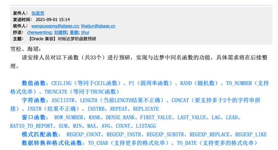 |
2021-11-15 16:10:16 |
你 |
听老张的说法 这33个函数是泛微用的吗 |
2021-11-15 16:10:32 |
我 |
不闻不问 |
2021-11-15 16:10:40 |
你 |
好 |
2021-11-15 16:11:08 |
我 |
不是，是他自己总结 |
2021-11-15 16:11:32 |
你 |
好吧 |
2021-11-15 16:11:40 |
你 |
垃圾人 |
2021-11-15 17:39:05 |
你 |
[电话] |
2021-11-15 17:57:31 |
我 |
[电话] |
2021-11-15 17:58:37 |
你 |
[电话] |
{kind=link}
2021-11-16¶
2021-11-16 08:21:31 |
你 |
[链接] 李辉和丁明峰的聊天记录 |
2021-11-16 08:22:28 |
我 |
老丁这么快就找你要了 |
2021-11-16 11:51:28 |
你 |
老丁又找我了 |
2021-11-16 11:51:55 |
我 |
啊，啥事呀 |
2021-11-16 11:51:56 |
你 |
让我把所有oracle特性给列个表，他要求350必须做完 |
2021-11-16 11:52:07 |
我 |
[捂脸] |
2021-11-16 11:52:21 |
你 |
说他对老陈已经没有耐心了，特别烦他，脾气特大 |
2021-11-16 11:52:31 |
你 |
问我老陈最近干啥呢[捂脸] |
2021-11-16 11:52:37 |
我 |
好么 |
2021-11-16 11:52:55 |
我 |
早上他找了吕迅 |
2021-11-16 11:52:56 |
你 |
今天我跟他的沟通比较好，他也听我说了很多 |
2021-11-16 11:54:05 |
我 |
挺好 |
2021-11-16 11:54:26 |
我 |
你先吃饭吧，待会再细聊 |
2021-11-16 11:56:04 |
你 |
好 |
2021-11-16 12:51:06 |
我 |
你和老陈说了老丁的事情了没 |
2021-11-16 12:51:25 |
你 |
今天的没说 |
2021-11-16 12:51:30 |
你 |
昨天的说了 |
2021-11-16 12:51:41 |
我 |
开会前找老陈说一下吧 |
2021-11-16 12:51:55 |
我 |
今天老丁也找吕迅了 |
2021-11-16 12:51:56 |
你 |
今天的？ |
2021-11-16 12:52:00 |
你 |
说的啥 |
2021-11-16 12:52:07 |
我 |
吕迅已经和老陈说了 |
2021-11-16 12:52:23 |
我 |
主要是numa |
2021-11-16 12:52:41 |
你 |
为啥老陈要1点半讨论规划啊 |
2021-11-16 12:52:53 |
我 |
不知道 |
2021-11-16 12:53:04 |
你 |
我找老陈说老丁跟我说的要把 Oracle 不支持项归拢归拢吗 |
2021-11-16 12:53:05 |
我 |
是不是老丁又找他了 |
2021-11-16 12:53:15 |
你 |
先看看一点半说啥吧 |
2021-11-16 12:53:24 |
你 |
反正老张也不在 |
2021-11-16 12:54:02 |
我 |
老张走了吗？不是要微信接入吗 |
2021-11-16 12:54:30 |
你 |
他走了 |
2021-11-16 12:54:34 |
你 |
咱们就别提呗 |
2021-11-16 12:54:46 |
你 |
老陈不提 我才不接入他呢 |
2021-11-16 12:55:51 |
我 |
你还是尽快找老陈吧，一个是给老陈更全面的信息，一个是看看老陈会不会有些话和你私下里说 |
2021-11-16 12:56:02 |
你 |
好 |
2021-11-16 13:57:02 |
你 |
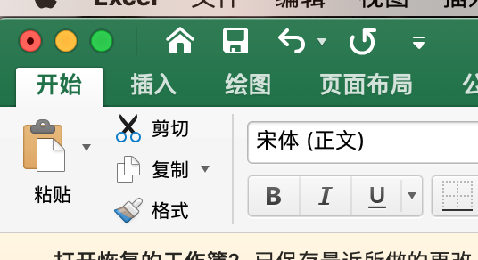 |
2021-11-16 13:57:10 |
你 |
这个工具我不能用了 |
2021-11-16 13:57:17 |
你 |
你把淘宝链接给我个 |
2021-11-16 13:57:30 |
我 |
？ |
2021-11-16 13:57:44 |
我 |
office 不能用了？ |
2021-11-16 13:58:12 |
你 |
就是那个最大化的小图标 |
2021-11-16 13:58:31 |
我 |
你不是买过吗？那个是永久的 |
2021-11-16 13:58:40 |
我 |
是不是没有启动呀 |
2021-11-16 14:00:40 |
你 |
啊 那我重启下 |
2021-11-16 14:01:00 |
我 |
你拿过来我看一下吧，不一定重启管用 |
2021-11-16 14:01:14 |
你 |
哦 |
2021-11-16 15:32:30 |
你 |
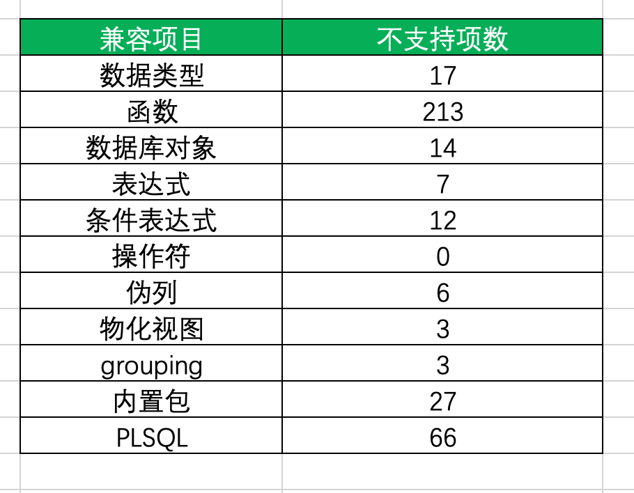 |
2021-11-16 15:33:20 |
我 |
[强] |
2021-11-16 15:33:45 |
你 |
这还不包括 语法 |
2021-11-16 15:33:56 |
你 |
OMG |
2021-11-16 15:34:56 |
我 |
工作量最大的是第一项和最后一个 |
2021-11-16 15:35:23 |
你 |
内置包 27个 你知道多少个具体的方法吗 |
2021-11-16 15:35:29 |
你 |
我没敢写 |
2021-11-16 15:35:35 |
你 |
396个[呲牙] |
2021-11-16 15:36:09 |
我 |
😄 |
2021-11-16 15:54:54 |
你 |
Oracle 内置包294个 方法我估计接近2K |
2021-11-16 15:55:02 |
你 |
没个都10来个方法 |
2021-11-16 15:55:39 |
我 |
是，所以需要甄别 |
2021-11-16 16:40:48 |
你 |
我准备下班了 |
2021-11-16 16:41:15 |
我 |
嗯嗯，我还在观察呢[捂脸] |
2021-11-16 16:42:10 |
你 |
我晚上去游泳 |
2021-11-16 16:42:43 |
我 |
学的咋样啦[偷笑] |
2021-11-16 16:43:58 |
你 |
就上了一次课 |
2021-11-16 16:44:01 |
你 |
啥也不会呢 |
2021-11-16 17:25:26 |
你 |
[电话] |
{kind=link}
{kind=link}
2021-11-17¶
2021-11-17 08:33:48 |
你 |
|
2021-11-17 08:34:37 |
我 |
[强][强][强] |
2021-11-17 08:35:20 |
你 |
厉害吧 |
2021-11-17 08:35:31 |
我 |
很厉害啦 |
2021-11-17 08:35:36 |
你 |
就学会票 |
2021-11-17 08:36:27 |
我 |
漂的挺好的 |
2021-11-17 08:36:39 |
你 |
还挺优美的 |
2021-11-17 08:37:38 |
我 |
是呀是呀😍 |
2021-11-17 11:10:51 |
我 |
规划你发给老丁了吗 |
2021-11-17 11:16:44 |
你 |
发了 |
2021-11-17 11:17:21 |
我 |
他回复了吗？ |
2021-11-17 11:19:06 |
你 |
[链接] 李辉和丁明峰的聊天记录 |
2021-11-17 11:22:30 |
我 |
感觉老丁理解错了 |
2021-11-17 11:22:54 |
我 |
他关注到了那些不做的 |
2021-11-17 11:23:03 |
我 |
其实那些不是我们不做 |
2021-11-17 11:30:17 |
你 |
他说的是 现在不做 |
2021-11-17 11:30:22 |
你 |
就是350不做 |
2021-11-17 11:30:36 |
我 |
哦哦 |
2021-11-17 11:42:56 |
你 |
孟志鹏说老丁已经不止一次在经营会上跟老陈说让他做个oracle出来 |
2021-11-17 11:43:17 |
我 |
好吧，老陈回来从来没有说过 |
2021-11-17 13:28:31 |
你 |
|
2021-11-17 13:30:24 |
我 |
唉，光拼人数咱们就不行，幸亏咱们的底子还好，要是用 PG 这点人根本就不够填的 |
2021-11-17 13:31:07 |
你 |
达梦肯定是 单机的是主力 咱们这人挺多 实际都搞别的呢 |
2021-11-17 13:31:22 |
你 |
咱们可不是底子好 |
2021-11-17 13:31:28 |
我 |
嗯嗯，他的研发其实也是包括测试在内的 |
2021-11-17 13:31:40 |
你 |
这数也可能不准 |
2021-11-17 13:37:01 |
你 |
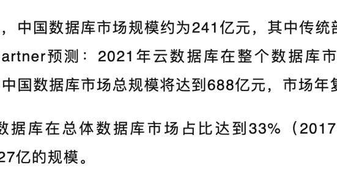 |
2021-11-17 13:37:34 |
我 |
嗯，就这两年的时间了 |
2021-11-17 14:46:31 |
我 |
老田这是和老张杠上了[捂脸] |
2021-11-17 14:46:36 |
你 |
哈哈 |
2021-11-17 14:46:41 |
你 |
是呢 |
2021-11-17 14:47:06 |
我 |
这样也好，可以转移注意力[偷笑] |
2021-11-17 14:47:35 |
你 |
那是 |
2021-11-17 14:48:18 |
我 |
老田晨会的时候还说，老张在好多场合说不让给现场发工具，说工具不是产品 |
2021-11-17 14:48:28 |
你 |
是 |
2021-11-17 14:48:31 |
你 |
在技术的群里 |
2021-11-17 14:48:43 |
我 |
老田气坏了，说周会上要提提这事，让老陈说说 |
2021-11-17 14:49:00 |
你 |
哈哈 |
2021-11-17 15:00:17 |
你 |
咱们晋商银行签单了 你知道吗 |
2021-11-17 15:00:34 |
我 |
不知道 |
2021-11-17 15:00:43 |
你 |
MySQL 迁移 就提了 group_concat 一个需求 没有别的问题 |
2021-11-17 15:01:11 |
你 |
也是郭赫的单子 |
2021-11-17 15:01:17 |
你 |
应该又多一个案例 |
2021-11-17 15:01:25 |
你 |
还有四川银行 |
2021-11-17 15:01:28 |
我 |
嗯嗯 |
2021-11-17 15:06:40 |
你 |
四川银行一个问题都没提 新上的系统 HAC 集群 |
2021-11-17 15:07:08 |
我 |
直接适配吗？ |
2021-11-17 15:07:14 |
我 |
没用 O 特性？ |
2021-11-17 15:07:38 |
你 |
原来是 ifx 现在是新系统 |
2021-11-17 15:07:49 |
我 |
哦哦 |
2021-11-17 15:08:40 |
你 |
我看330的问题还是有一些的 大问题不多 小问题不少 |
2021-11-17 15:09:27 |
你 |
牟魏他们真不行 |
2021-11-17 15:09:39 |
我 |
咋了 |
2021-11-17 15:09:48 |
我 |
他们干啥了 |
2021-11-17 15:12:49 |
你 |
他们不做客户关系 天天逼研发 |
2021-11-17 15:12:53 |
你 |
要不老陈不支持他们 |
2021-11-17 15:12:56 |
你 |
兴业黄了 |
2021-11-17 15:14:01 |
我 |
哦 |
2021-11-17 16:01:22 |
你 |
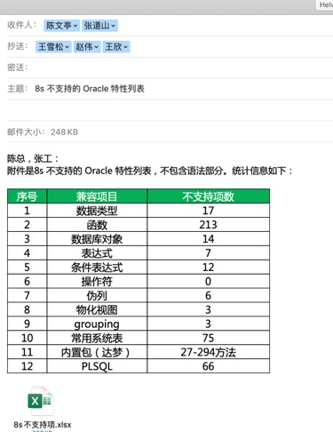 |
2021-11-17 16:01:26 |
你 |
我写封邮件 |
2021-11-17 16:01:41 |
我 |
好 |
2021-11-17 16:07:32 |
你 |
收下邮件 |
2021-11-17 16:08:10 |
我 |
手册那个吗？ |
2021-11-17 16:08:14 |
你 |
对 |
2021-11-17 16:19:58 |
我 |
你今天几点下班 |
2021-11-17 16:23:25 |
你 |
老丁找我 |
2021-11-17 16:23:30 |
你 |
等会 |
2021-11-17 16:31:58 |
你 |
[电话] |
2021-11-17 17:20:40 |
我 |
完事了 |
2021-11-17 17:20:52 |
我 |
走吧 |
2021-11-17 17:20:54 |
你 |
号 |
{kind=link}
{kind=link}
2021-11-18¶
2021-11-18 09:05:10 |
我 |
没睡醒吗 |
2021-11-18 09:05:26 |
你 |
嗯 |
2021-11-18 09:05:32 |
你 |
早上没起来 |
2021-11-18 09:05:44 |
你 |
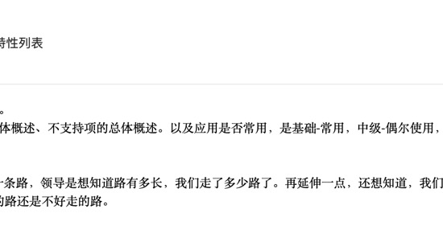 |
2021-11-18 09:05:50 |
你 |
这个邮件老陈单独发给我的 |
2021-11-18 09:06:03 |
你 |
我估计是因为我抄送老赵的缘故 |
2021-11-18 09:06:24 |
我 |
嗯 |
2021-11-18 09:06:39 |
我 |
你按照老陈的意见写写吧 |
2021-11-18 09:06:44 |
你 |
嗯嗯 |
2021-11-18 10:49:47 |
你 |
刚才刘建志找我了 说冀辉让老侯给他发版列表 要提供给销售 告诉销售什么可以卖什么不可以卖 老侯把冀辉骂回来了 |
2021-11-18 10:50:13 |
我 |
😄 |
2021-11-18 11:50:40 |
你 |
[链接] 李辉和丁明峰的聊天记录 |
2021-11-18 11:50:57 |
你 |
老丁的意思是跟老陈统一思想？ |
2021-11-18 11:51:06 |
你 |
规划的事 |
2021-11-18 11:53:27 |
你 |
[电话] |
2021-11-18 12:37:14 |
你 |
|
2021-11-18 12:40:15 |
我 |
[动画表情] |
2021-11-18 12:44:17 |
你 |
压力山大 |
2021-11-18 15:38:12 |
你 |
忙吗 |
2021-11-18 15:38:22 |
我 |
不忙 |
2021-11-18 16:21:46 |
我 |
[链接] 群聊的聊天记录 |
2021-11-18 16:22:57 |
你 |
老陈给你发的 |
2021-11-18 16:23:15 |
我 |
发在部门干部群里面的 |
2021-11-18 16:24:19 |
你 |
有人说话吗 |
2021-11-18 16:24:25 |
我 |
没有 |
2021-11-18 16:24:36 |
你 |
你昨天找老陈说啥了 |
2021-11-18 16:24:55 |
我 |
没说老丁的事情，说的是 XH 课题 |
2021-11-18 16:25:07 |
你 |
哦 |
{kind=link}
{kind=link}
2021-11-19¶
2021-11-19 09:11:07 |
我 |
你今天先找李世辉过一下规划 |
2021-11-19 09:13:06 |
我 |
我昨天推演了一下，下午和你详细说一下 |
2021-11-19 09:20:57 |
你 |
好的 |
2021-11-19 09:23:49 |
你 |
你们那个干部群里有世辉吗 |
2021-11-19 09:37:31 |
我 |
没有 |
2021-11-19 09:38:24 |
我 |
eal把server全扔里面了[捂脸] |
2021-11-19 09:38:52 |
你 |
老丁以为 eal 完事了呢 |
2021-11-19 09:42:08 |
我 |
吕迅管的项目，每次都是如此 |
2021-11-19 11:38:43 |
你 |
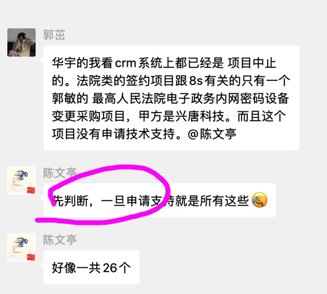 |
2021-11-19 11:38:46 |
你 |
这是啥意思 |
2021-11-19 11:49:18 |
我 |
不知道[捂脸] |
2021-11-19 11:49:35 |
我 |
这又不知道是什么事 |
2021-11-19 14:36:42 |
你 |
十所.xlsx |
2021-11-19 14:38:57 |
我 |
红色是不支持的吧 |
2021-11-19 14:39:12 |
你 |
红色是支持的 |
2021-11-19 14:39:27 |
我 |
哦 |
2021-11-19 17:07:03 |
我 |
石英找你了吗 |
2021-11-19 17:07:16 |
你 |
我没在 |
2021-11-19 17:07:17 |
你 |
咋了 |
2021-11-19 17:07:27 |
我 |
她要请咱俩吃饭[捂脸] |
2021-11-19 17:07:36 |
你 |
今天吗 |
2021-11-19 17:07:43 |
我 |
说先去约你的时间 |
2021-11-19 17:07:56 |
我 |
下周 |
2021-11-19 17:08:05 |
你 |
哦 你想去吗 |
2021-11-19 17:08:19 |
我 |
我答应她了，看你 |
2021-11-19 17:08:24 |
你 |
可以啊 |
2021-11-19 17:23:08 |
你 |
我下班了 |
2021-11-19 17:23:22 |
你 |
没看到你啊 |
2021-11-19 17:24:47 |
我 |
你下楼了吗 |
2021-11-19 17:25:08 |
我 |
我刚去厕所了 |
2021-11-19 17:25:10 |
你 |
在楼下 |
2021-11-19 17:25:14 |
你 |
你还下来吗 |
2021-11-19 17:25:27 |
我 |
下去，等电梯呢 |
2021-11-19 17:25:34 |
你 |
好，我等你 |
{kind=link}
2021-11-22¶
2021-11-22 12:49:02 |
你 |
今天咱们还是发不了工资 |
2021-11-22 12:49:07 |
你 |
你知道吗 |
2021-11-22 12:49:19 |
我 |
会发部分人的 |
2021-11-22 12:49:35 |
你 |
怎么这么严峻 |
2021-11-22 12:49:36 |
我 |
老陈说管理层没有，就是不知道管理层有多大[捂脸] |
2021-11-22 12:49:49 |
你 |
你单独跟他问得吗 |
2021-11-22 12:50:04 |
我 |
今天早上晨会刘建志和我们说的 |
2021-11-22 12:50:16 |
你 |
估计我们这可怜的 管理层又被波及了 |
2021-11-22 12:51:29 |
我 |
唉，听说去年的应届生都发了 |
2021-11-22 12:51:38 |
我 |
估计是因为人少钱少 |
2021-11-22 12:52:33 |
你 |
为啥定的22号 |
2021-11-22 12:52:41 |
你 |
怎么现金流又断了 |
2021-11-22 12:52:57 |
我 |
肯定是因为钱到不了呀 |
2021-11-22 12:53:16 |
我 |
老丁今年融资不顺利，两次融资都失败了 |
2021-11-22 12:53:27 |
我 |
不知道现在的钱是不是借的 |
2021-11-22 12:53:55 |
我 |
另外就是以前咱们在银行的评级比较高，连着两年亏损，评级也下来了 |
2021-11-22 12:55:54 |
你 |
也不知道啥情况了 |
2021-11-22 12:56:15 |
我 |
不知道，这些情况估计连老陈都不是很清楚 |
2021-11-22 12:56:51 |
你 |
嗯 |
2021-11-22 12:57:01 |
你 |
有好消息估计就会说了 |
2021-11-22 12:57:18 |
我 |
肯定的 |
2021-11-22 12:57:26 |
我 |
要不然老丁也不会那么着急呀 |
2021-11-22 13:02:25 |
你 |
今天也不开周会了 |
2021-11-22 13:02:56 |
我 |
老陈忙着准备 PPT 呢，让刘建志组织，刘建志不想开 |
2021-11-22 13:03:06 |
你 |
那就别开了 |
2021-11-22 14:19:50 |
你 |
你知道 ifx 的 row 数据类型吗 |
2021-11-22 14:20:06 |
我 |
知道 |
2021-11-22 14:20:18 |
你 |
跟记录像吗 |
2021-11-22 14:20:39 |
我 |
很像，以前高宏达他们就是用 row 模拟记录的 |
2021-11-23¶
2021-11-23 10:25:43 |
我 |
[链接] 王雪松和李迎的聊天记录 |
2021-11-23 10:25:48 |
我 |
保密 |
2021-11-23 11:49:52 |
你 |
我的工资条发了 |
2021-11-23 11:50:02 |
你 |
扣了2400 说是缺勤 |
2021-11-23 11:50:23 |
我 |
问问hr |
2021-11-23 11:50:31 |
你 |
好 |
2021-11-23 11:50:39 |
你 |
我没缺勤啊 |
2021-11-23 11:51:14 |
我 |
钉钉缺勤应该有提醒才对 |
2021-11-23 11:58:28 |
你 |
气死我了 |
2021-11-23 11:58:35 |
你 |
产假给我扣了3天 |
2021-11-23 11:59:05 |
我 |
你请了产假？ |
2021-11-23 11:59:40 |
你 |
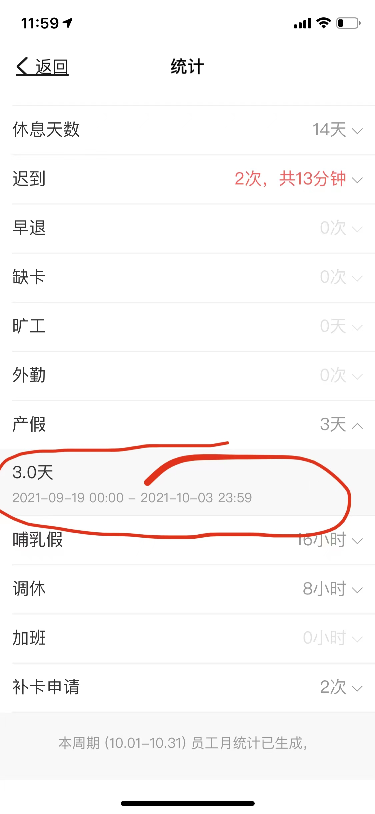 |
2021-11-23 11:59:52 |
你 |
咱们工资发的是哪天到哪天的？ |
2021-11-23 12:00:44 |
我 |
1 号到月底 |
2021-11-23 12:00:58 |
你 |
10.1到10.30？ |
2021-11-23 12:01:03 |
我 |
是 |
2021-11-23 12:01:17 |
你 |
我7号上的班 10月份全勤 |
2021-11-23 12:01:18 |
我 |
不过你这个时间不是法定假吗 |
2021-11-23 12:01:24 |
你 |
对啊 |
2021-11-23 12:01:30 |
我 |
对呀，他们搞错啦 |
2021-11-23 12:01:50 |
你 |
当初我请的时候 就怕这个 问他请到9.30还是10.4 他让我请到10.4 |
2021-11-23 12:02:11 |
我 |
你还有当时的聊天记录吗 |
2021-11-23 12:03:28 |
你 |
|
2021-11-23 12:06:09 |
我 |
你直接问问袁艳吧，10 月份你的工作日是满的，这三天如果要扣钱也应该是工作日扣，否则这 3 天就应该给你算工作日，要先给你加钱的 |
2021-11-23 12:07:29 |
你 |
我先找郭虹 |
2021-11-23 12:07:42 |
我 |
嗯嗯 |
2021-11-23 12:24:20 |
你 |
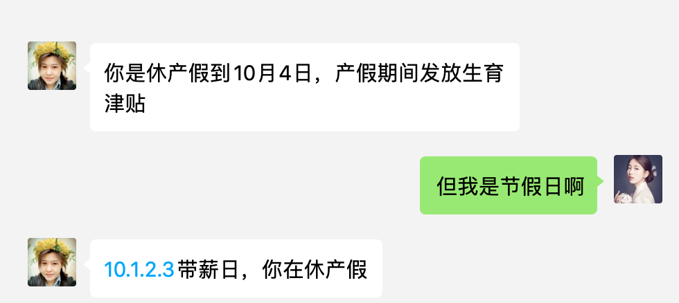 |
2021-11-23 12:24:24 |
你 |
看看他的逻辑 |
2021-11-23 12:25:01 |
我 |
他的意思是 10.1.2.3 三天给你发了生育津贴？ |
2021-11-23 12:25:07 |
你 |
对 |
2021-11-23 12:25:23 |
我 |
那为什么要扣工资呢？ |
2021-11-23 12:25:24 |
你 |
所以不给工资 |
2021-11-23 12:25:37 |
我 |
工资不是按照工作日来算的吗 |
2021-11-23 12:26:48 |
我 |
这相当于你工作日上满了，钱拿少了 |
2021-11-23 12:26:57 |
你 |
对 |
2021-11-23 12:27:15 |
你 |
因为123 该休假的3天 我休了产假 |
2021-11-23 12:27:48 |
我 |
这是什么逻辑 |
2021-11-23 12:28:21 |
我 |
我觉得你可以找一个公益律师咨询一下 |
2021-11-23 12:28:29 |
你 |
我跟他要制度条款 |
2021-11-23 12:28:45 |
你 |
如果没有 我就咨询下律师 |
2021-11-23 12:28:48 |
你 |
气死我了 |
2021-11-23 12:29:06 |
我 |
这种小鬼最讨厌了 |
2021-11-23 12:33:53 |
你 |
[链接] 李辉和*Enya*@@的聊天记录 |
2021-11-23 12:36:03 |
我 |
没搞懂他的逻辑 |
2021-11-23 13:45:33 |
你 |
说下月补给我 |
2021-11-23 13:45:44 |
我 |
那就好 |
2021-11-23 13:54:33 |
你 |
数据管理产品经营部_2022年产品研发规划_V1.0_20211123.docx |
2021-11-23 13:54:40 |
你 |
你看看产品路标那个章节 |
2021-11-23 13:54:49 |
我 |
好 |
2021-11-23 13:57:05 |
我 |
3.6.0 显得有点虚 |
2021-11-23 13:57:33 |
你 |
我这思路不对 |
2021-11-23 13:57:36 |
你 |
想问问你 |
2021-11-23 13:57:38 |
你 |
你看完了吗 |
2021-11-23 13:58:33 |
我 |
给别人的感觉是功能 350 里面都做完了，360 主要是性能提升 |
2021-11-23 13:58:49 |
你 |
我去找你去 |
2021-11-23 16:03:11 |
你 |
刚才张道山说微服务后就不需要存储过程了 |
2021-11-23 16:03:19 |
你 |
我都吓傻了 |
2021-11-23 16:03:26 |
你 |
有这个逻辑吗 |
2021-11-23 16:03:30 |
我 |
这俩没啥关系呀 |
2021-11-23 16:03:45 |
你 |
他就能愣说 |
2021-11-23 16:52:02 |
你 |
我准备走了 |
2021-11-23 16:52:19 |
你 |
你还跟我走吗 |
2021-11-23 16:52:21 |
我 |
好，我陪你下去 |
{kind=link}
{kind=link}
{kind=link}
2021-11-24¶
2021-11-24 08:32:11 |
你 |
是上海静安区的事吗 |
2021-11-24 08:32:21 |
我 |
是 |
2021-11-24 08:32:53 |
我 |
这事折腾很久了，一直以 EAL4 为借口压着没做 |
2021-11-24 08:33:18 |
你 |
嗯 |
2021-11-24 08:33:30 |
你 |
估计又找上边的人了 |
2021-11-24 08:33:39 |
我 |
是 |
2021-11-24 16:16:25 |
你 |
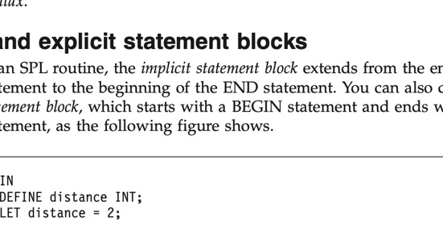 |
2021-11-24 16:16:31 |
你 |
这种块 SPL 支持 |
2021-11-24 16:19:24 |
你 |
咱们不能直接用吗 |
2021-11-24 16:20:21 |
我 |
这个咱们现在已经有了 |
2021-11-24 16:20:31 |
我 |
你是想说匿名块吗 |
2021-11-24 16:20:50 |
你 |
对啊 |
2021-11-24 16:20:58 |
我 |
这个不是匿名块 |
2021-11-24 16:21:14 |
我 |
这个是存储过程里面的声明块 |
2021-11-24 16:21:36 |
我 |
匿名块本质是一个匿名的存储过程 |
2021-11-24 16:21:46 |
我 |
spl 不支持匿名的存储过程 |
2021-11-24 16:27:56 |
你 |
ifx 真垃圾 |
2021-11-24 16:59:23 |
我 |
我不想干活了 |
{kind=link}
2021-11-25¶
2021-11-25 09:48:25 |
你 |
–记录类型 CREATE TYPE record_type AS RECORD ( record_c1 test1.c1%TYPE, record_c2 test1.c2%TYPE ); |
2021-11-25 09:50:20 |
你 |
CREATE TYPE record_type2 AS RECORD ( record_c1 test1_object ); |
2021-11-25 09:50:25 |
你 |
可以以 object作为record的其中一个字段 |
2021-11-25 10:05:03 |
我 |
嗯 |
2021-11-25 10:48:48 |
你 |
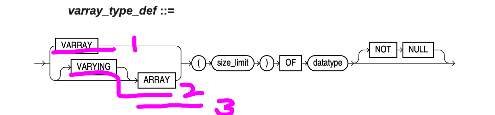 |
2021-11-25 10:48:56 |
你 |
这3个有啥区别啊 |
2021-11-25 10:49:37 |
我 |
是不是就是不同写法呀 |
2021-11-25 10:50:29 |
你 |
我看 Oracle 全文都没介绍 array |
2021-11-25 10:50:36 |
你 |
只有语法树里有个关键字 |
2021-11-25 10:51:58 |
你 |
大部分都是：create type xxx as varray(10) of varchar2; |
2021-11-25 10:52:08 |
你 |
没有这个例子 create type xxx as array(10) of varchar2; |
2021-11-25 10:52:17 |
你 |
达梦的 array 挺多的 |
2021-11-25 10:54:41 |
我 |
我试试 |
2021-11-25 10:55:00 |
我 |
石英和你说了中午去吃饭吗 |
2021-11-25 10:56:25 |
你 |
说了 |
2021-11-25 11:05:13 |
我 |
create type xxx1 as varying(10) of varchar2(10); 这个能创建成功，但是有一个错误 |
2021-11-25 11:05:26 |
我 |
Type XXX1 compiled LINE/COL ERROR ——— ————————————————————- 1/21 PLS-00103: Encountered the symbol “(” when expecting one of the following: array The symbol “array” was substituted for “(” to continue. Errors: check compiler log |
2021-11-25 11:05:43 |
我 |
create type xxx2 as varying array(10) of varchar2(10); 这个没有问题 |
2021-11-25 11:07:00 |
我 |
create type xxx3 as array(10) of varchar2(10); 这个也没有问题 |
2021-11-25 11:07:03 |
你 |
我理解： create type xxx2 as varying array(10) of varchar2(10); = create type xxx2 as varray(10) of varchar2(10); |
2021-11-25 14:38:10 |
你 |
我们测试了 嵌套表的功能 完全可以用两张表实现。不用建立多个表，2张表就行 |
2021-11-25 14:38:27 |
我 |
怎么做 |
2021-11-25 17:15:42 |
你 |
https://help.aliyun.com/document_detail/150059.html |
2021-11-25 17:15:49 |
你 |
array 到底是个啥 |
2021-11-25 17:15:56 |
你 |
他跟 varray 有啥区别 |
2021-11-25 17:16:00 |
你 |
你帮我搞搞 |
2021-11-25 17:16:48 |
我 |
我看看 |
2021-11-25 17:20:56 |
我 |
array 应该就是 Hash 表或者叫 Map |
2021-11-25 17:21:05 |
我 |
保存 KV 对 |
2021-11-25 17:21:39 |
你 |
那跟 table index by 一样吗 |
2021-11-25 17:23:17 |
我 |
table of … index by 就是定义array 的关键字 |
2021-11-25 17:37:44 |
你 |
那就是我说的那样的 |
2021-11-25 17:38:02 |
你 |
create array 就等价于 table of … index by |
2021-11-25 17:38:08 |
我 |
对 |
{kind=link}
2021-11-26¶
2021-11-26 10:21:06 |
你 |
一会跟你说个事 |
2021-11-26 10:21:16 |
你 |
你们没啥聊的 快点结束 |
2021-11-26 10:21:23 |
我 |
好 |
2021-11-26 10:22:19 |
我 |
老陈没完没了[捂脸] |
2021-11-26 10:26:21 |
我 |
开完了 |
2021-11-26 10:39:43 |
你 |
真漂亮 |
2021-11-26 10:39:58 |
你 |
很精致 |
2021-11-26 10:40:02 |
你 |
还买了2个 |
2021-11-26 10:40:12 |
我 |
喜欢吧 |
2021-11-26 10:40:20 |
你 |
喜欢喜欢 |
2021-11-26 10:40:25 |
你 |
正好我缺耳钉 |
2021-11-26 10:40:37 |
你 |
耳钉不好买 |
2021-11-26 10:40:53 |
我 |
我调了很久，关键是你的限制[捂脸]，我看上的都比较贵 |
2021-11-26 10:41:00 |
你 |
我跟李杰特别适合珍珠 |
2021-11-26 10:41:08 |
你 |
别买太贵的 |
2021-11-26 10:45:30 |
你 |
提个小意见 下次买的时候 金属部分要金色的 珍珠永远不会错 |
2021-11-26 10:45:57 |
你 |
我真的很开心 以为今年没有了 |
2021-11-26 10:46:05 |
你 |
你送我的我都留着呢 |
2021-11-26 10:46:37 |
我 |
好的，明年还有呢 |
2021-11-26 10:46:46 |
你 |
嗯嗯 |
2021-11-26 11:00:36 |
你 |
发文的 老田搞上去了 |
2021-11-26 11:00:55 |
我 |
看见了 |
2021-11-26 11:09:26 |
你 |
天津银行多写多读的是啥情况 |
2021-11-26 11:10:26 |
我 |
天津银行要求支持 RAC，能够满足多读多写。之前咱们测试过，不满足，老丁知道这事了要咱们出解决方案 |
2021-11-26 11:11:03 |
我 |
具体的可以问问维群 |
2021-11-26 11:11:14 |
你 |
有方案了吗 |
2021-11-26 11:11:33 |
我 |
没有，老陈说咱们就按照现有能力写一个[捂脸] |
2021-11-26 11:11:57 |
我 |
老陈认为咱们没有什么机会，只是为了应对老丁 |
2021-11-26 11:12:11 |
你 |
好吧 |
2021-11-26 11:12:14 |
我 |
我担心老丁会让咱们安排研发规划 |
2021-11-26 11:12:21 |
你 |
。。。 |
2021-11-26 11:12:39 |
你 |
规划的事 还托着呢 |
2021-11-26 11:13:31 |
我 |
等着吧 |
2021-11-26 11:13:37 |
你 |
1suo 的事已经完事了是吧 |
2021-11-26 11:13:44 |
我 |
完事了 |
2021-11-26 11:14:16 |
你 |
我追追老陈 |
2021-11-26 11:14:23 |
你 |
下周一开会讨论 |
2021-11-26 11:14:23 |
我 |
嗯嗯 |
2021-11-26 11:18:07 |
你 |
老陈说可以 |
2021-11-26 11:55:56 |
你 |
我下班了啊 |
2021-11-26 11:56:31 |
我 |
我陪你下去吧 |
2021-11-26 12:20:40 |
你 |
[电话] |
2021-11-26 14:42:56 |
你 |
你说把老杨整过来做8s的部长怎么样 |
2021-11-26 14:43:05 |
你 |
产品部长 |
2021-11-26 14:43:08 |
我 |
不可能的 |
2021-11-26 14:43:21 |
你 |
为啥 |
2021-11-26 14:43:39 |
我 |
老丁认为老杨太虚了 |
2021-11-26 14:44:40 |
你 |
抛开这个呢 |
2021-11-26 14:45:15 |
我 |
老赵也需要老杨，老陈不一定会答应，老杨也不一定想来 |
2021-11-26 14:45:32 |
我 |
而且如果老杨来了，就没你啥事了 |
2021-11-26 14:45:34 |
你 |
老陈为啥不答应？ |
2021-11-26 14:46:09 |
我 |
简单点说，老陈现在有你，他就不会去要老杨 |
2021-11-26 14:46:28 |
你 |
好吧 |
2021-11-29¶
2021-11-29 09:28:39 |
你 |
吉大和晋商都出现切换问题了 |
2021-11-29 09:29:07 |
你 |
是不是330的事 |
2021-11-29 09:29:35 |
你 |
都是飞腾平台 |
2021-11-29 09:29:51 |
我 |
是刚出的问题吗？吉大正元上周处理了切换问题，现在没有问题了 |
2021-11-29 09:30:55 |
你 |
切换成功备成为主后，主就回不去了 |
2021-11-29 09:31:02 |
你 |
晋商银行的事 |
2021-11-29 09:31:11 |
我 |
这个不知道 |
2021-11-29 09:48:13 |
我 |
刚才石英过来和我抱怨半天老张，说他的 340 没有任何进展，一直拖。 |
2021-11-29 10:28:45 |
你 |
Listagg是通过自定义函数实现的吗 |
2021-11-29 10:29:06 |
我 |
不是 |
2021-11-29 10:43:58 |
我 |
[链接] 群聊的聊天记录 |
2021-11-29 10:45:53 |
你 |
这早就看到了 |
2021-11-29 10:46:16 |
我 |
这个是老丁先发的，然后老陈转给咱们的 |
2021-11-29 10:46:25 |
你 |
。。。 |
2021-11-29 10:46:30 |
你 |
你在工位吗 |
2021-11-29 10:46:33 |
我 |
随后老丁@老陈了 |
2021-11-29 10:46:35 |
我 |
在 |
2021-11-29 10:48:17 |
你 |
生产库使用的云服务器因为采用新挂盘方式增加磁盘空间因此有多个表空间， 需要迁移数据到新服务器上， 新服务器是一个50G系统盘，一个1T数据盘。 是否能用全量备份，全量恢复的方案迁移生产库数据至新服务器， 性能和导入导出方式比较如何？ |
2021-11-29 11:25:28 |
你 |
你在食堂吗 |
2021-11-29 11:25:52 |
我 |
没有 |
2021-11-29 11:26:01 |
你 |
回来了 还是没去 |
2021-11-29 11:26:11 |
我 |
还没去呢 |
2021-11-29 11:26:33 |
你 |
给我带份素炒西兰花行不 |
2021-11-29 11:26:41 |
你 |
我懒得出去了 |
2021-11-29 11:26:46 |
我 |
好的 |
2021-11-29 11:26:48 |
你 |
如果没有 就别带了 |
2021-11-29 11:34:47 |
我 |
有，买完了 |
2021-11-29 11:34:57 |
你 |
谢谢 |
2021-11-29 11:50:19 |
我 |
回来了 |
2021-11-29 13:22:19 |
我 |
开会了 |
2021-11-29 13:29:50 |
你 |
困死我了 |
2021-11-29 13:32:13 |
你 |
你给我的钢笔多少钱 |
2021-11-29 13:32:38 |
你 |
我想给李杰买一个 |
2021-11-29 13:32:44 |
你 |
你有链接吗 |
2021-11-29 13:33:27 |
你 |
时间有点长了 |
2021-11-29 14:04:45 |
我 |
我找找 |
2021-11-29 14:22:31 |
我 |
我的找不到了 |
2021-11-29 14:22:35 |
我 |
嘿嘿嘿，嘻中为于说他去人生么后好，二凌美钢笔德国lamy狩猎者Safari礼盒装成人学生专用送礼练字限量版 |
2021-11-29 14:23:04 |
我 |
凌美狩猎者 F笔尖 |
2021-11-29 14:59:12 |
你 |
中石油的那个 冀辉写需求了 |
2021-11-29 14:59:25 |
我 |
好的，让他写吧 |
2021-11-29 15:00:01 |
你 |
那个项目你们需要重新写代码吗 |
2021-11-29 15:00:16 |
你 |
那个还有工具的事呢 不过已经送测了 |
2021-11-29 15:00:35 |
我 |
需要写代码 |
2021-11-29 15:43:34 |
我 |
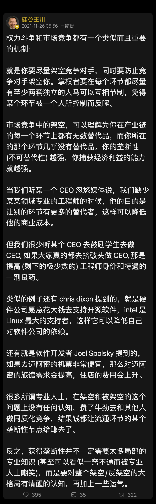 |
2021-11-29 15:46:00 |
你 |
[强] |
2021-11-29 15:46:22 |
你 |
虽然我没看懂 但我觉得是层次非常高的认知 |
2021-11-29 15:46:33 |
你 |
我还停留在费牛劲的阶段 |
2021-11-29 15:46:45 |
我 |
不明觉厉[偷笑] |
2021-11-29 15:47:21 |
我 |
回来我再给你好好讲讲吧 |
2021-11-29 15:48:04 |
你 |
嗯嗯 |
2021-11-29 15:48:07 |
你 |
必须的 |
2021-11-29 16:48:53 |
我 |
顺着老陈说 |
2021-11-29 16:49:01 |
你 |
嗯 |
2021-11-29 17:42:30 |
我 |
你几点下班 |
2021-11-29 17:43:31 |
你 |
现在走吧 聊20分钟 |
2021-11-29 17:44:11 |
我 |
好 |
2021-11-29 17:44:57 |
我 |
[链接] 群聊的聊天记录 |
2021-11-29 18:32:01 |
你 |
[电话] |
2021-11-29 18:43:51 |
你 |
[电话] |
{kind=link}
2021-11-30¶
2021-11-30 08:31:14 |
你 |
[电话] |
2021-11-30 09:27:02 |
你 |
[链接] 群聊的聊天记录 |
2021-11-30 10:44:35 |
你 |
T3-3008-GBase 8s用户密码管理需求说明书_V1.0_lh.docx |
2021-11-30 10:45:07 |
我 |
嗯 |
2021-11-30 10:46:45 |
你 |
你看看我给的批注 |
2021-11-30 10:46:55 |
你 |
他写的这个差好多 |
2021-11-30 10:46:56 |
我 |
正在看 |
2021-11-30 10:47:27 |
我 |
这个文档模板是你给他的吗 |
2021-11-30 10:47:33 |
你 |
不是 |
2021-11-30 10:47:41 |
你 |
但是跟我以前写的很像 |
2021-11-30 10:47:48 |
你 |
这个模板的事还有事呢 |
2021-11-30 10:48:04 |
我 |
这个估计不能用，老陈说过要用 XC 的模板 |
2021-11-30 10:48:06 |
你 |
他找我要模板 我让他找石英要 并把老张340的给他了 |
2021-11-30 10:48:17 |
你 |
然后他看了石英的 说写不了 |
2021-11-30 10:48:31 |
你 |
非得要我的 我说我的怕别人不认 |
2021-11-30 10:48:48 |
你 |
然后我就问老张 老张说按照340的来 |
2021-11-30 10:48:59 |
你 |
结果不知道怎么就写成了这样 |
2021-11-30 10:49:11 |
我 |
明白了 |
2021-11-30 10:51:01 |
你 |
T3-3008-GBase 8s用户密码管理需求说明书_V1.0-ReviewedByHaven.docx |
2021-11-30 10:51:07 |
你 |
这个是老张给的批注 |
2021-11-30 10:52:42 |
你 |
小强刚才跟冀辉要需求来了 我没给 |
2021-11-30 10:52:52 |
你 |
我觉得他写的这个不行 怕误导研发 |
2021-11-30 10:53:01 |
我 |
👌 |
2021-11-30 10:53:05 |
你 |
小强说他关注三权分立 结果这需求没写 |
2021-11-30 10:53:20 |
你 |
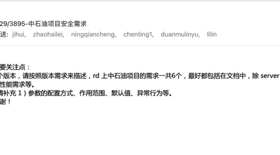 |
2021-11-30 10:53:30 |
我 |
这个小强呀，我和他说需求去问常建卯 |
2021-11-30 10:53:48 |
你 |
我觉得他是自己干的 所以就没给 |
2021-11-30 10:54:05 |
我 |
我是让他评估一下 |
2021-11-30 10:54:07 |
你 |
肯定不是你让他要的 |
2021-11-30 10:54:19 |
我 |
我没让他去要需求 |
2021-11-30 10:54:25 |
你 |
我知道 |
2021-11-30 10:54:29 |
你 |
所以就没给他 |
2021-11-30 10:54:35 |
我 |
嗯嗯 |
2021-11-30 12:27:37 |
我 |
[链接] 群聊的聊天记录 |
2021-11-30 13:03:09 |
你 |
冀辉中午对我给的批注有疑问 问我 我给他简单解释了一下 就让老张给他解释 结果他和老张干起来了 |
2021-11-30 13:14:21 |
我 |
刚才老丁找我 |
2021-11-30 13:14:31 |
我 |
回来和你面谈吧 |
2021-11-30 13:15:31 |
你 |
啥事啊 |
2021-11-30 13:15:35 |
你 |
公司要倒闭了 |
2021-11-30 13:15:37 |
你 |
？ |
2021-11-30 13:15:53 |
我 |
不是，还是规划的事情 |
2021-11-30 13:16:06 |
你 |
又咋了 |
2021-11-30 13:16:42 |
我 |
他希望一个月一个版本 |
2021-11-30 13:17:27 |
你 |
其实没意义 |
2021-11-30 13:17:53 |
我 |
你现在有空吗，到会议室我和你说说 |
2021-11-30 13:18:28 |
你 |
走 |
2021-11-30 14:44:42 |
你 |
Oracle 兼容分阶段实现明细表.docx |
2021-11-30 14:44:58 |
我 |
好的 |
2021-11-30 14:52:52 |
我 |
[链接] 丁明峰和王雪松的聊天记录 |
2021-11-30 15:00:24 |
你 |
压力山大 |
2021-11-30 15:00:40 |
我 |
是呀 |
2021-11-30 15:30:03 |
你 |
Oracle 兼容分阶段实现明细表_V1.0.docx |
2021-11-30 15:30:07 |
你 |
更新了一版 |
2021-11-30 15:30:58 |
我 |
好 |
2021-11-30 15:42:08 |
你 |
你找老陈了吗 |
2021-11-30 15:42:19 |
我 |
没有 |
2021-11-30 15:44:15 |
你 |
张振鹏说一天没看见老陈了 |
2021-11-30 15:44:22 |
我 |
哦 |
2021-11-30 15:58:52 |
我 |
Oracle 兼容分阶段实现明细表_V1.0_评估.docx |
2021-11-30 15:59:03 |
我 |
你先看看吧 |
2021-11-30 15:59:07 |
你 |
好 |
2021-11-30 16:11:07 |
我 |
你还记得咱们是哪个版本支持GB18030的吗？ |
2021-11-30 16:13:39 |
你 |
啊 我查一下 |
2021-11-30 16:17:31 |
你 |
G7支持 |
2021-11-30 16:17:58 |
你 |
A2也支持 |
2021-11-30 16:18:04 |
我 |
28s的S4版支持吗 |
2021-11-30 16:18:11 |
我 |
金民 |
2021-11-30 16:18:14 |
你 |
稍等 |
2021-11-30 16:23:11 |
你 |
没有的面大 |
2021-11-30 16:23:14 |
你 |
我再查一查 |
2021-11-30 16:30:29 |
我 |
好 |
2021-11-30 16:38:58 |
你 |
没查到应该是没合并 |
2021-11-30 17:14:46 |
我 |
我不陪你了，太忙了 |
2021-11-30 17:14:51 |
你 |
嗯 |
{kind=link}